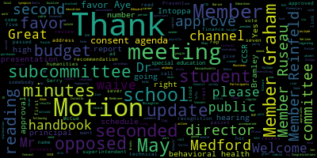
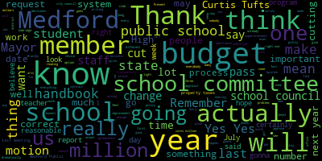
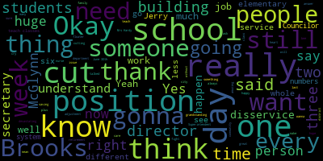
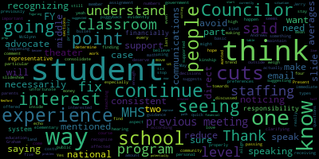
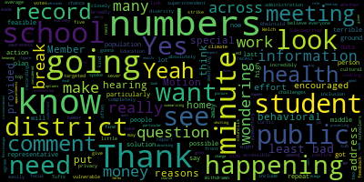
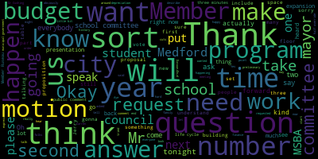
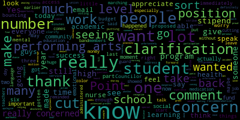
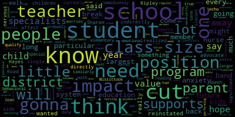

[Cabral]: and via remote participation.
[Lungo-Koehn]: This meeting is being recorded.
The meeting can be viewed live on Medford Public Schools' YouTube channel through Medford Community Media, on your local cable channel, Comcast Channel 9, 8, or 22, and Verizon Channel 43, 45, or 47.
Participants can log in or call in by using the following Zoom link.
A meeting ID is 953-1198-7344.
If you would please call the roll, Member Russo.
[Ruseau]: Member Brantley.
[Branley]: Present.
[Ruseau]: Member Graham.
[Branley]: Here.
[Ruseau]: Member Ntapa.
[Olapade]: Here.
Present.
[Ruseau]: Member Reinfeldt.
Present.
Member Rousseau.
Present.
Mayor Longo Kern.
[Lungo-Koehn]: Present.
7 present, 0 absent.
[Ruseau]: Mayor.
[Lungo-Koehn]: We have a student rep.
[Ruseau]: Student rep.
You're asking us also, Mayor.
[Lungo-Koehn]: Yes.
Thank you for being here.
If you all may rise to salute the flag, please.
[Whalen]: I pledge allegiance to the flag of the United States of America, and to the Republic for which it stands,
with liberty and justice for all.
[Lungo-Koehn]: Thank you.
We have our consent agenda, bills and payrolls, approval of capital purchases, public budget hearing meeting minutes from May 6, 2024, regular school committee meeting minutes from May 6, 2024, ad hoc subcommittee on handbook process minutes from May 8, 2024, behavioral health and special education subcommittee minutes May 15, 2024,
and a recommendation to approve a $3,000 grant from the Massachusetts Cultural Council to fund summer arts workshops.
Is there a motion?
[Reinfeld]: Motion to sever the public hearing minutes and the behavioral and special ed.
[Lungo-Koehn]: Motion to sever by Member Reinfeldt, seconded by Member Rousseau.
All those in favor?
Motion to sever has been approved.
[Reinfeld]: I'd like to amend the minutes to the Special Education and Behavioral Health Subcommittee to include a link to the meeting recording, because I believe that the feedback provided by the representatives from Curtis-Tufts should be easily accessible with the record of the votes.
[Lungo-Koehn]: Motion to include a link on those meeting minutes by Member Reinfeldt, seconded by?
[Cushing]: Second.
[Lungo-Koehn]: Member Ntukpa, all those in favor?
All those opposed?
[Reinfeld]: And I'd also like to strike from the public hearing minutes the home address of the students who provided public comment for privacy reasons.
[Lungo-Koehn]: Strike the home address from the meeting minutes from May 6th, 2024 public budget hearing.
[Reinfeld]: And just put the- Just put their names that they spoke.
I don't think their home address should be on public record for students.
[Lungo-Koehn]: Motion to amend the public hearing meeting minutes from May 6, 2024 regarding the budget by member Reinfeld, is there a second?
Second.
By member Ntapa, all those in favor?
Aye.
All those opposed?
Meetings are passed as amended.
And motion to approve the rest of the consent agenda.
Motion to approve the rest of the consent agenda by member Reinfeld, seconded by?
Second.
Member Ntapa, all those in favor?
Aye.
All those opposed?
Consent agenda is approved.
We have reports of subcommittees, ad hoc, subcommittee on handbook process, May 8th, 2024.
CHCB AB, handbook review and schedule, the school committee's report.
Member Russo?
Motion to waive the reading.
Motion to waive the reading with an explanation.
[Ruseau]: It's on the agenda and it's quite long.
I'm happy to talk about it too, but if you wanna read it, you're welcome to.
[Lungo-Koehn]: what is the committee, would they like me to read it?
[Graham]: Second.
[Lungo-Koehn]: Just to waive the reading.
Motion for approval by Member Rousseau, seconded by Member Graham.
All those in favor?
Aye.
Okay, meeting is waived.
If you could give a synopsis.
[Ruseau]: Absolutely.
So the, sorry, as I have to take the minutes at the same time, give me just a moment.
[Robbins]: Here we go.
[Ruseau]: So on
When did we actually meet on May 8 to discuss the process for doing school handbooks the school committee is required annually by law to approve school handbooks, and we have.
done that some years and not done that some or many years.
So we worked up a process we reviewed I reviewed, I took some example policy from other districts, notably Cambridge, and worked up a timeline policy that we, the rest of the committee members.
fleshed out the synopsis is that there's three phases of the handbook process that we would like to see implemented.
The first phase is the initiation of the handbook update process, which the superintendent's office will manage.
And there's quite a long date range of August 1st to September 30th for them to accomplish that.
Then those go over to the school council the site camp, school councils excuse me at each of the buildings, and those individual councils one of their required, but one of their tasks as a school council is to draft changes to the handbook, and they get a pretty big.
October 1 to January 31 is the expected time when they would do that work.
And then finally, this comes back to the school committee for approval sometime between February 1 and April 30.
There's a whole, there's a lot of language, but those are the most important things, is that there's dates and there's expectations.
And I think that the big improvement here, aside from having dates, the big improvement is that
there's these two memorandums that will accompany these changes.
So the laws change every year, court cases, et cetera.
And so we often have to update our school handbooks because we don't have a choice.
But when the school councils, and I've heard this from school councils, they make these changes and they don't have any idea why.
So there'll be a memorandum that goes to them explaining exactly why these are changes that you don't really have a choice on.
And then if the school council wishes to make further changes to the handbooks, you know, things like school pickup at elementary schools, they would also write that up so that when we get the actual handbooks for approval, we're not reading them like
just this gigantic set of documents with no idea what changed from last year.
So hopefully that will improve the process and make it so that we actually do the approvals.
Because I mean, all the school handbooks stacked together is quite a thing.
And having no clue what changed year to year is, is sort of a monumental task.
So that's the policy proposal.
The
We didn't have administration in the meeting, and that was on purpose, because we wanted to just focus on what the school committee wanted.
So if the dates do not work for the administration or the school councils, we're certainly happy to hear feedback on that, and adjust those dates.
So that is the synopsis.
[Lungo-Koehn]: Is there a motion to approve?
Or do you want to?
[Ruseau]: Motion to approve first reading.
[Lungo-Koehn]: Motion to approve first reading by member Rousseau, seconded by?
[McLaughlin]: Second.
[Lungo-Koehn]: Member Ntopper, all those in favor?
Aye.
All those opposed?
First reading is passed.
We have behavioral health and special education subcommittee then meeting with member Graham.
[Graham]: Can I motion to waive the second reading?
[Lungo-Koehn]: Of the handbook review and schedule, motion to waive the second reading by member Graham.
[Reinfeld]: Yeah, we would like to give the administration and school councils a chance to confirm that this works for them.
[Graham]: Oh, okay, fine.
Withdrawn.
[Reinfeld]: Withdrawn.
[Lungo-Koehn]: Behavioral health and special education subcommittee meeting was held on May 15, 2024.
Recommendation to co-localize Curtis Tufts and the main high school campus.
Would anybody like to give an update on this?
Member Roussell?
[Ruseau]: Certainly.
So the last school committee meeting was the last one, I believe.
Actually, it's in here.
On April 29th, not the last school committee meeting, there was a resolution to have the subcommittee discuss the possibility of co-locating the Curtis Tufts with the Medford High School when we are actually re-imagining slash rebuilding Medford High.
And there were a lot of reasons for that, such as some of the more obvious ones is that
The Medford High students not at Curtis Tufts would be in a beautiful facility and the Curtis Tufts is if you've seen it is not exactly that.
But facilities aside, they were all these opportunities that Curtis Tufts students cannot actually participate in or it's very, very difficult to get across town between classes and club participation is low.
At the last meeting there was also the director of the program in Somerville, and they used to have a separate program like Medford does, and they co located when they built a new Somerville High School.
And the reviews were amazing.
You know, students, their therapeutic learning program are captains of sports teams, participating in all of the clubs.
So the quality of educational experience for those students went very much through the roof.
So we listened to, you know,
I believe it was a survey or just maybe just gathered information from current students, staff were in the meeting of the Curtis Tufts, and the, in my opinion, the unanimous opinion of everyone who participated was that this made sense to make this recommendation.
So, this is the recommendation of the subcommittee that we
co locate the Curtis Tufts, at some point, probably when we do the high school over with the main campus.
[Lungo-Koehn]: Great, thank you for the work.
Motion for approval by members so seconded by member of the party.
All those in favor.
I was opposed.
Thank you.
We'll send that to the MSP a subcommittee report of superintendent, Dr. Maurice Edward Vincent updates and comments.
[Edouard-Vincent]: Thank you.
having several presentations to recognize some of our student accomplishments.
But later, after we get through our first additional four reports, we will be presenting the budget update.
During this presentation, we hope that we are able to answer many of the questions that have come in to the district through email or through direct conversations, specifically regarding the arts and
change in programming that is going to be recommended for the arts.
So I am asking all of you who are here this evening to please let us get through the agenda.
And once we're done with that we'll have a budget update and presentation in time for questions and for us to be able to explain the rationale
work that went behind the decisions that did have to be made.
I can say, just for the purposes of the audience that is here, there have been a lot of questions about no longer having a marching band or anything related to the performing arts, and that is complete misinformation.
The student experience in the Medford Public Schools will be an identical student experience.
The one arts related position that was cut was due to a resignation that we received, and that resignation has taken place already.
The individual has resigned from the district and is no longer employed with Medford public schools, and that was a theater arts position.
cut without a face or a name.
So I do want to call that out because there have been many communications about arts programming, ending in midfield, and I deeply, deeply support the arts and so does the entire method public schools.
So I wanted to just put that information out there.
and try to correct some of the misinformation that was spread.
I do recognize today we have our CCSR update.
Mr. Trotter will be here with our students and recognize two of our Brooke students, Savannah McLaughlin
and Adam Costello who will talk about their special project that they did this year.
We're very excited and happy to hear about you.
I want to recognize Dr. Nicole Hughes, our Director of Humanities, who will be recognizing many of our students that have
performed a wonderful outstanding achievements over the course of this year.
And then we will have a high school update from Mr. Brown, the principal of the high school and Mr. Chad found principal director of the vocational school, and Mr. Brown will be discussing the high school survey results.
And then following those presentations, Mr. Chairman, the director of finance will be presenting a finance update to provide context and additional background, followed by a vote of the school committee.
Thank you.
[Lungo-Koehn]: Thank you, Dr. Edwardson.
Like I said, next up is CCSR update and student recognition.
Mr. Richard Trotter, director of CCSR, accompanied by Brooks Elementary School students Savannah McLaughlin and Adam Costello.
Welcome to our meeting.
[Trotter]: Okay, good.
Okay.
I should know that I used to run the media tech department.
My name is Richard trial and director of the CCSR and happy to be here.
I want to thank the school committee the mayor and superintendent for supporting the program.
I also want to thank the advisors you have the list in your report.
The executive team of the high school have been very active and supportive of the program, doing a lot of work.
Oprah and Anna Narika, who just got accepted to Harvard University, I think that was in the news.
Sophia Suho and Jonah Siegel.
Those four students were very instrumental in getting the whole high school programs accomplished in the last two years.
And mostly I want to thank the students of the CCSR for all their fine work.
And then I also want to thank the benefactors.
We have three benefactors that have provided $700,000 in funds for the program.
The Cummings Foundation, Crystal Campbell Community Fund, and Bloomberg Foundation making this possible.
And we're funded through the next six years under the Cummings Foundation grant.
As you know, the mission of the program is to develop leaders, social entrepreneurs who work to make the world a better place.
It's that simple.
And we've had, this year, 400 students, approximately 70 projects.
In my full report, which you have, I think it's 80 pages long, you will find all those projects.
And so we're very proud of the work the students did and advisors did this year.
I just want to mention one more thing before I bring the students up.
We have a summer art studio program that's going to be run through from Cummings Foundation funds and that will be publicized once we get the schedule set and it will take place in the month of July.
And so I look forward to that and we'll be putting out there to the public and hopefully we'll get some good response this year.
I'd like to have Jonas Segal over here, just short.
I'd like to have Jonas say a few words.
He represents the high school.
He's one of the executive team leaders.
And then we're gonna bring up Adam and Savannah.
Thank you.
[Siegel]: Hello, my name is Jonah Siegel.
I'm part of the executive team of the CCSR at the high school.
I joined the CCSR as a freshman.
And since then I began a project of river cleanups with my friend Maggie, and we've partnered with the Missick River Watershed Association and held many successful cleanups.
And we were the youngest ever winners of a Tufts Community Grant.
for our effort.
And I wanted to talk about how CCSR, what I think is really special about it is how it changes your mindset on leadership.
I can remember when I was a freshman, and I just joined the CCSR.
When I looked around and I saw things around me that needed improving, I
Before I would just walk and continue about my day, but now I would think about it and I would say, how could I make a CCSR project about this?
How could I change this?
And I think that's what's great about the CCSR is it gives you a platform.
It gives you a resources, not only financial resources and in terms of mentors, but it also gives you a community that really encourages the mindset of just go out and do it.
Like be the change you wanna see in the world.
And I think that's really special for children to develop, which is why I think it's great that we have this program all throughout the district and the elementary schools and the middle schools and the high schools.
And I hope it can continue to expand and be a part of more children's lives, because it's really just a great place for them to learn that they can make a change.
[Trotter]: I want to recognize two former CCR members, Aaron O'Roddy and John Van Topper.
Good morning, guys.
Now I'll introduce the two students from the Brooks School who did the excellent report, a project on the postal safety, and they are Savannah and Adam.
Come on up.
[Simon]: Hello.
[Savannah McLaughlin]: I'm going to read the letter.
My name is Savannah McLaughlin, along with my classmate Adam Costello.
We are fifth grade students from the Brooks Elementary School on High Street.
We both learned about the terrible attack on one of your co-workers this past Halloween.
I live in the neighborhood where the assault took place.
I saw all the news trucks and reporters at the end of my street while my friends and me were trick-or-treating.
I didn't know why they weren't there, but I remember being excited to have a chance to be seen on TV.
It wasn't until the next day I was told what happened.
Adam heard the news by overhearing some students talking about it in school.
We both felt so sad for the victim and so angry about the cowardly attackers.
They had no way to put a finger on him.
Male carriers are very important.
and deserve to be treated with the highest degree of respect.
He was just doing his job.
We've been told there has been a rise of attacks on postal workers.
We want this to stop.
centers for citizenship and social responsibility.
It is a district wide after school program that's dedicated to making the community and the world a better place to live.
Each year students are asked to think of a project that will help
make a positive impact, we decided on track, and we'll help my friends weather carriers to feel safe.
We were first thinking of supplying you with pepper spray or tasers but after some teacher guidance, we thought it was best to build safety whistles.
First, we co-hosted a school fundraiser at the Brooks to raise enough money.
to provide all seven of you a neon orange whistle.
The emergency whistles have an adjustable reflective liner and can emit high and low frequency sounds.
If you ever feel unsafe on the job, roll on this whistle.
Hopefully, help will come quickly or the danger will leave quickly.
We hope you find this gift useful.
Please always know we appreciate and care about you.
Thank you for serving MET through.
Sincerely, Adam and Savannah.
[Lungo-Koehn]: I just want to thank everybody that is part of the CCSR it is.
[Branley]: a huge, a huge undertaking.
And I think it's a huge, amazing, it's really amazing that this was happening in our city.
I love that Jonas said that this is making him be, you know, a better person.
He's not walking by something and what more do we want in our community than someone to say, hey, this needs to be fixed or this isn't right.
I think that it's one of the most important things that you can do.
It is so hard to get up to that podium and speak.
Jonah you did it without any writing.
I stood at that podium many times I couldn't do without writing something ahead of time.
You're very well spoken, I've watched you grow at the Brooks, and I'm so grateful that you're here so thank you so much.
Savannah.
I'm a huge fan of your mama but you might have moved ahead.
in the McLaughlin chain for me tonight.
That was awesome.
You and Adam are amazing.
I've loved watching all these Brooks bees come up here, especially once a bee, always a bee, right?
So my heart is always there.
So thank you guys so much for making a difference.
And thanks for switching on the taser and the pepper spray.
Good job.
[Lungo-Koehn]: Membrane topper.
[Intoppa]: I also just wanted to take a second and just recognize how important this program is to our students.
I actually, unfortunately, only got a chance to be a part of it my senior year in high school, but that was the cohort that witnessed it go to the elementary and middle school level.
And just seeing how much it's grown in only what I like to say two years, but it's been like five or six now, is absolutely amazing.
And I'm so proud of you guys and everyone who's involved to get up here and speak and do what you do.
This program really takes you know when you take a moment and look at students special interests and you look at what they want to do to give back to the community and you fund that and you encourage them to do it, you see such an increase in their overall academic success and their participation in our community.
the social emotional learning skills that you get.
And I just, I really, you know, seeing what happened and seeing the unfortunate incident that happened and just immediately coming to action and then doing this.
I just, I can't commend you guys enough and I can't wait to see what you guys do next.
I really can't.
So thank you.
Thank you so much.
[Ruseau]: Yes, thank you.
I just want to comment that I feel like I see Jonah more than some of my own children.
Everywhere I go I see Jonah whether it's in a play or at the State House on May 10 or the ninth.
sixth, whatever, he seems to always be everywhere, which is sort of what you'd expect from our students who are, and not just Jonah, there are several other students who are also at the Statehouse, and I don't think that's a CCSR project, but you know, they're
participation doesn't just start and end with the club times.
And I think that's really impressive.
I do wonder how anybody manages that much in their schedule, but thank you for all of your efforts.
[Haley]: Yes.
[Edouard-Vincent]: I just want to say thank you again to all of you, you did a wonderful job.
Savannah, Adam and thank you Jonah as well.
I want to thank Mr. Trotter, I know we wouldn't have this program without the generous support of Cummings Foundation and our other partners but the Cummings Foundation truly
keeps getting back to Medford, and this is a worthwhile program to continue investing in and so I just want to send another special thank you to them for their continued support of our school programming.
Thank you again.
[Lungo-Koehn]: Member Graham.
[Graham]: I just wanted to say thank you Adam and Savannah.
Savannah and I live in the same neighborhood.
So and I happen to be home when when attacked place and I happen to be driving by as the police were responding.
So it was sort of hard to understand what was happening at the time.
But I sure I'm glad the news media didn't ruin Halloween for us in the neighborhood because that would have been terrible.
But thank you both for taking care of our mail carriers.
It's really important work.
Thank you.
[Trotter]: Just before we finish, I just want to mention the fact that the advisor, Michael Coates, couldn't be here because of a family issue.
And he does a fantastic job with the students.
This is not the first time that he's done an outstanding project with the students.
And finally, I'm very proud of the program.
I'm very proud of these students.
It makes me happy.
I'm sure it makes you happy.
So thank you.
Thank you.
[Lungo-Koehn]: We have number three humanities student recognition, Dr. Nicole Chiesa, Director of Humanities.
Welcome.
[Chiesa]: Good evening.
Thank you for the opportunity tonight to honor several of our students who have
really accomplished so many amazing achievements throughout the year, so we won't bring them all up because we know that would take too much time but we're happy for those that were able to attend tonight we know there are games going on and other things happening.
And as I go through the names will ask people to stand so that we can honor them.
slide by slides.
But first, I do want to take a moment on the next slide to thank the school committee, to thank Ms.
Cabral, Mr. Fallon, Mr. Tucci, and Ms.
Skane for supporting these endeavors because we could not do it alone.
Certainly for thanking you for funding and supporting us throughout the school year.
So thank you.
So I'm going to be reading a lot of names.
You do have the report that you were provided with that explains several of these different endeavors.
But if there's any questions, I am more than happy to explain anything.
We are going to start with the writing achievements, some of the writing achievements.
Certainly this is not encompassing every achievement of the year, but some of the ones that we haven't had a chance to honor.
And so we do have the Boston Playwrights Theater's Young Playwrights Project.
Why don't I read the names and then people could stand after, would that work for the group, the committee?
Okay, great.
So for the Boston Playwrights Theater's Young Playwrights Project, we have Michaela Callahan, Mandy Chow, Julia Hanratty, Kian Liu, Jonah Segal, Bethea Pierce, Kira Tramble, Stanley Sunwoo, Becky Wang, and Maria Zara.
And we wanna thank Mr. Bowen Flynn for supporting the students throughout that.
We were also able to have the Shakespearean monologue competition.
We had one of our students who's here tonight, Jonah Siegel, who spoke so eloquently, really advanced quite far and Mr. Bowen Flynn and all of us were just so proud of the efforts.
For Boston Globe Scholastic Writing Award, we have our student here tonight, Christine Dehotel, who received both an honorable mention and a silver key.
She is a student of Mr. Ambrose, who shared with me today that she has a whole collection of writings.
So we're very excited to see future works down the line, hopefully.
And finally, we have the Immigration Learning Center Teen Perspective.
We had three students from Ms.
Sanford's class.
receive awards, Mosamed Habiba, Michael Pak, Madgulat Takele.
So if we could have the students that were able to come tonight stand and honor them, thank you so much and congratulations.
And of course, thank you to their teachers as well.
The next slide is our students in action.
So every year we have the opportunity to have some students go and actually go to different activities where they can engage in government actions.
We had the MASC Day on the Hill.
We had four students attend with Mr. Bowen Flynn.
And we also wanted to give a special thank you to the school committee members who took, who were able to attend.
Committee member Graham, Reinfeld, and Rousseau, as well as Senator Jalen for supporting the students at the event.
The students that were chosen for that were Mandy Chow, Ann Dupes, Sierra Isbell, and Jonah Segal.
Segal, sorry.
In addition to that, and I'm sorry, I know I'm talking fast, I'll slow down.
I just want to make sure I get through the names.
We also had students participate in Student Government Day, and we do have pictures up there showing them in action as they attended Government Day.
That was Helen Lucas and Noah Urosofsky.
Oh, sorry, you're Osco, I apologize.
And Mr. Bowen Flynn, who's our English teacher, was able to accompany them, said what a wonderful day it was for them.
And we were appreciative of their time as well.
We also had the geography be at our middle school, and we had finalists come and attend, and we had some really strong winners come out of that.
We shared with you in the narrative some of the questions that they had to answer.
They were superb.
So we did want to take a minute to recognize Joe Hogan, Richard Mongol,
Stanley Tong, and Stefano Lozaro, who achieved first place, Elliot Traber-Hill, who achieved second place, and Emmett Berryman, who achieved third place.
We are really, really proud of them, really proud of Mr. McCarthy, Mr. Villard, Ms.
O'Donohue, and Mr. Zizzo for supporting them through this.
So all the students who I just named, if they could take a moment, if they're here, and we could maybe congratulate them for such an excellent job well done, that would be wonderful.
I should also mention that they will be receiving certificates within their buildings, just not tonight in the interest of just a lot of wonderful success stories.
The next event that we wanted to make sure we recognized were our simulations.
So we have a few different groups that engage in various simulations through clubs or through classroom activities.
And we begin with our model United Nations.
This year model United Nations was run by Mr. Matthew Brophy.
And he did it as more of an after school activity and he accomplished so many wonderful things that I did share with you in the narratives, but we were really proud of him to be able to do this after school as opposed to in class, and he you approved the Dartmouth overnight field trip they had a wonderful time and did quite well.
They have an amazing team.
I've put a picture in the background for you, and I'll just read the names through, and hopefully those who are here can be honored.
So we have Emma Ben-Wi, Man Chow, Shahan Qadri, who did receive an Honorable Mention recipient at one of the simulations.
Brian DiPlazido, who received a People's Choice Award.
Jack Dodd,
And oops, Yamilee Etienne, Sierra Godley, Bridget Inman, Sierra Isbell, Mohammed Jamaldeen, Sean Johnson, Margaret Carroll, Leanne Lam, Evan Russell, Kira Tremble, Kiana Tran, Darren Truong,
who also received both a Model United Nations Outstanding Delegate and Best Orator recipient, both two awards.
Daviana Vega, Jaden Ville, Noah Urasco, and Maria Zasra, I'm having trouble tonight, sorry, Zasra, I apologize.
They did an amazing job, love the energy, and a huge thank you to Mr. Brophy as well.
If anyone's here tonight, if they'd like to stand to be honored, we would love to congratulate you for all of your efforts.
Okay, and last but not least, we have our mock trial and our ethics bowl.
Our mock trial, as you read in the narrative, engaged in multiple trials throughout the school year.
They were led by our advisor, Ms.
Dineu, and they,
both worked in the classroom to prepare for these mock trials, as well as after school, and then were able to really go in, get different points based on their arguments, and achieve some very strong success.
Participants in mock trial were Michelle Began, Genevieve Blatt, Eric Brown, Michael Koday, Clay Canavan, Nathan Chevalier, Sophia DeMillo, Brian DiPlacido, Gavin Gain,
DeFord Guerra, Nathaniel Hopper, Maria Lima Costa, Helen Lucas, Anna Sophia Marrera, Madeline Morris, Theodore Norton, Mark Parr, Tenzin Richen, and Christopher Rothermel.
And then we had our EPICS Bowl, which I've already presented on before.
And thanks to your generosity, they did go to nationals.
They had a wonderful time.
They performed exceptionally well, as you read.
And we just wanted to take, again, I know I already thanked you, but we are very appreciative of your support for that trip.
And I wanted to read the names of the students who attended.
So we have Sonia Benapal, Anne Dupes, Andre Duriti, Claire Gingo, Amira Laflam, Carmen Morgante,
Bahaba Sahil, and we also have our wonderful advisor, Mr. Esner.
I also failed to mention in the slide previous to that, for Model UN, the other advisor in addition to Mr. Brophy is Ms.
Gates.
If you could stand, if you were able to attend, and we could honor you and thank you for all of your hard work.
Thank you again for your time, for supporting these students, and a huge congratulations to the students, the teachers, and everybody else.
Thank you so much.
I'm happy to answer any questions, but yeah, I'm happy to answer any questions.
Thank you.
[Lungo-Koehn]: Great presentation.
Congratulations.
Thank you.
[Chiesa]: Thank you very much.
[Lungo-Koehn]: I noticed a few people stood up more than once too, so we'll get some.
Great students, well-rounded.
We have our Medford High School update and survey results.
Our principal, Ms.
Manta Cabral, welcome.
[Cabral]: Am I on?
Yes.
Good evening, Mayor, members of the School Committee, and Superintendent, Dr. Eduardo Vinson.
It is hard to believe that in less than two weeks, we'll be wishing our seniors well as they cross the stage to graduate and continue on with post-secondary in our careers.
The end of the school year is a busy time with exams, events, and celebrations, but it's also a time to reflect on the accomplishments and growth of the school.
Tonight, we'll review and highlight the school year.
Specifically, we'll review the culture and climate survey, share new core values and community norms, highlight the accomplishments of our CTE programs, along with what is next for MHS.
The Culture and Climate Survey was administered in May of 2023, 2024, sorry, was administered in May of 2023 and again most recently in late April of 2024.
A total of 711 MHS students in grades 9 through 12 participated in the survey during advisory block.
The survey is composed of eight categories, cultural awareness and action, diversity and inclusion, school belonging, school climate, school engagement, school safety, student teacher relationships, and valuing of school.
When presented with the 2022-2023 school year data, MHS identified and shared at a previous school committee member three categories.
The categories included areas of strength, areas with varied results, and areas for growth.
In slides six through eight, I've provided statistical comparison between the two years.
It's important to note that Panorama, the survey platform, identifies increases of more than two percentage points as statistically significant, meaning it could have not happened by chance based on our survey size.
I've identified questions from the survey to share with you tonight and represent areas of strength and continued areas of growth for Medford High School.
As shown on slide six, school belonging is how much students feel they're valued members of the school community.
In all three questions, students showed 5% or more increase from the 2022-2023 school year.
School engagement.
Students' attentiveness and investment in school remain stable at 91%.
And lastly, valuing of school.
How much students feel that school is interesting, important, and useful showed an increase of between 7 to 9%.
And slide seven, student-teacher relationships.
Strength of the social connections between students and teachers within and beyond school.
This year, I would identify student-teacher relationships as a strength at MHS, with an eight to 10% increase in the five questions shared.
This is a testament to the dedication of our valued faculty.
School safety demonstrated a 9-15% shift in the questions identified.
Students at school feel safe, students at this school get along with each other, students at school threaten to hurt other students, and students at this school fight a lot.
I consider school safety to remain in the varied results category.
On slide eight, school climate, overall social and learning climate of the school, this category showed significant growth from the 2022-2023 school year.
The questions with the greatest change are, adults at this school reward students for positive behavior, students at this school try to work out their disagreements with other students by talking to them, and school rules and discipline are applied equally and fairly.
Lastly, cultural awareness and action, along with diversity inclusion, show that they are trending in a positive direction.
Medford High School has focused on creating environments where students feel welcomed, supported, and safe.
We've made an assertive effort and commitment to hear students and staff voices, and have not only listened, but made changes at MHS to incorporate feedback and suggestions.
We held more community gatherings to build school spirit and pride.
We worked together on core values and have continuously incorporated restorative practices into our work with students, along with providing professional development on restorative and tiered model intervention strategies in the classroom.
We understand that culture and climate shifts at Medford High School will take time, but we're committed to providing an inclusive, safe, and academically rigorous learning environment that our students and staff deserve.
I'm pleased to see the positive shifts are being made and that growth is noted over an 11th month span between surveys.
Consensus among educational researchers note a three to five year period for change.
Shifting to some of the work done this year, together as students and staff, we developed our new core values.
After conversations and advisory and small group panels, students selected the three core values of respect, responsibility, and empathy and kindness.
For staff, we held a workshop along with discussion and house meetings and surveys to identify the three shared core values.
Community norms were developed in January and discussed as a community and advisory.
We started working on a shared vision, along with a portrait of a graduate.
At this time, I'm going to pause and I'm going to hand it over to Mr. Fallon to highlight our CTE programs and students.
[Fallon]: Good evening, Madam Superintendent, Madam Mayor, members of the School Committee.
I'm going to provide a brief update on career and technical education for this year.
We did have 304 students, which was our highest number ever, participate in Freshman Exploratory.
Of those students, 185 were placed in CTE programs, and 72 students chose a traditional high school pathway.
At this time, we have 47 students on a wait list.
For cooperative education, we had 58 students.
Some of our stellar juniors who are ready ahead of time are out working and making money.
Over 50 employee partners make up our partnerships now.
Many of our seniors will continue employment after their graduation.
And two companies that I know of as of this week have offered complete college tuition for these two students that are working.
So that's exciting.
Some more updates, if you could click the link.
I've been talking about the sheds the few times I've been in front of you, and I think that's another good time to highlight what our students can do in the community.
So we started pretty basic, and as you'll see, the pictures, as they increase, they've become a little bit better each time, because practice makes perfect.
So that's what we call a man cave at this point, or woman cave.
That was a shed that they just did recently.
That's at the Andrew School.
So just to give you an idea of our carpentry students, it's our version of a house building project, but a little bit smaller.
In health assisting, we had seven of our students pass their CNA exam.
We have one certified dental assistant now.
We are finding success with the Bunker Hill Community College dual enrollment program, and we're exploring a new partnership for clinical rotations with Winchester Hospital.
Our construction and craft laborer students, the picture on the right, received their hoisting apprenticeship license this past week, and 15 students were inducted into the National Technical Honor Society.
For our electrical students, two students have been chosen to join the IBEW electrical union.
Nine students will be entering the workforce as apprentices immediately after graduation.
Pictured in the lower right is a picture of our graphic design program that made the Mustang pride t-shirt for some new swag that can be sold in the Mustang mall.
Two more things to share with you tonight, one being the biodiesel project that was a collaborative effort between multiple CTE programs.
So this all started by collecting waste vegetable oil from culinary.
Biotech students began the process of converting and using the cooking oil into clean burning fuel.
Then the students proceeded to learn and master the techniques to how to successfully produce several gallons of refined biodiesel, which burns cleaner than regular diesel fuel.
They also received a $2,000 grant from the Medford Educational Foundation to help pay for supplies.
Metal Fab and Auto Tech completed an engine swap of a go-kart, and Business Marketing explored the feasibility of starting a biodiesel production business.
They also took a field trip to the biodiesel factory, Northeast Biodiesel, which is out in Greenfield, to observe it on a much larger scale.
Coral Chavez will present our biodiesel project at the MAVA Connecting for Success conference in June.
Along with that, if you're in the neighborhood, Friday, we're having an open house of sorts to showcase some of our students' accomplishments this year.
We will be highlighting the biodiesel project.
The last thing I'd like to share, and if members of the team are here, if you could come up and join me, is to honor our robotics team, who has once again, are they here?
So this is the third year in a row that our students have competed.
Let me get my notes here.
And I wanna honor the students.
So I'm thrilled to announce that Medford's MVTHS Mate Robotics team has again won the Mate Rove New England Regional Championship.
This year, they narrowly edged out Phillips Exeter Academy by a score of 445 to 437.
Now they'll be representing New England at the competition in Tennessee, correct?
I'd like to honor Tim Hunt, Ben Santana, Miles Hilliard, Scott Campbell, Jonas Wurz, Matt Harris, Aaron Van Daniel, Zach Bertocchi, Franklin Soto-Ortiz, Noah Reed, and Ben Wertz.
Congratulations.
I never even try to explain anything in engineering and robotics.
I leave it for the students, so please tell us what you did.
[Harris]: Hey there, I'm Matty Harris, member of SecRobotics, obviously, our MVTHS robotics team.
As we mentioned, we compete in the MATE ROV competition, and so we design underwater robots that are designed to compete in a competition where we perform tasks that mimic real world environmental tasks like
like cleaning up, say, trash from the ocean, or finding data on marine life, improving habitats, and stuff like that.
It's a really amazing experience, combination of a lot of different disciplines in engineering, hardware, electrical, software.
I found it to be a really awesome learning experience.
And we also like to acknowledge that we couldn't do this without the support of our vocational teachers, Mr. Christie, he spent countless hours with us and Ms.
Miller as well, our programming teacher, and say it's a really great opportunity.
I'm very thankful.
Thank you.
[Fallon]: Also, I just wanna thank Ms.
Rachel Perry, who was really good in helping us find some lanes in the pool to test our robots.
So thank you, Rachel, for that.
Okay, back to you, Marta.
[Cabral]: All right.
So I believe we're on slide 14.
So alongside school site council for Medford High School and aligned with the district strategic plan we identified this year for strategic priorities for MHS.
and they're included in the school improvement plan for Medford High School.
This plan will span over three years and the four priorities are as followed that we want to improve or to improve student academic and technical achievement.
The second is to implement practices to ensure a safe, inclusive and supportive school climate and culture for all community members.
Number three is to improve community engagement and collaboration and routine regular
and transparent communications with all stakeholders in Medford, and to create a strategic list of facility needs in order to provide students and staff with clean, safe, and academically conducive learning environment.
So those can be found in the school improvement plan.
On slide 15, I would like to update on the status of the Welsh report recommendations that were provided last year and that were reviewed at the beginning of this school year.
For the first recommendation, a creation of MHS committees were recommended.
There were a total of four that were recommended to the school and to the committee, them being safety and security team.
We have implemented this by weekly meetings with our SRO, administration and director of school counseling.
Monthly meetings are also held with the district attorney's office to discuss support for youth in Medford.
Diversity, equity, and inclusion committee was recommended.
We've not formalized a committee yet, but we'll have one implemented for the 24-25 school year.
We recognize and believe that inclusion, diversity, and equity need to be at the center of our work.
Community on norms for student behavior, shared values.
This is something that we decided to do as a whole school and to develop shared norms and shared core values along with as a whole school have a shared vision for next year along with a portrait of a graduate.
And lastly, the schedule committee, a consultant was hired by MPS and we're continuing to review their recommendations for implementation.
The second recommendation was to provide more opportunities for teachers input and decision making and build relationships between teachers and administration.
Feedback is continuously incorporated into all staff meetings, along with processes on how to collect feedback and suggestions throughout the year virtually.
Number three, parent caregiver surveys about culture and climate and MHS during the 2023 2024 school year, we're currently working on creating this survey and distributing it at the end of the school year to our caregivers and parents.
Number four, MHS associate or assistant principal.
We did shift administration and we did hire a assistant principal for operations and school and student engagement.
Sorry, operations and student engagement, who is now part of the administrative team at Medford High School.
Mentoring for new administrators, new assistant principals attended this year the regional AP conference, and mentoring is continuously provided to APs through both Chad and myself.
They also attended workshops and other professional development opportunities offered to APs in our region.
MPS has also provided me with a coach this year, which has been wonderful through the School Administrator Association.
Lastly, the last slide is thoughts for the horizon.
Medford High School, and this is a program proposal that we would like to pilot at the high school.
Medford High School has identified a need for an alternative program for at-risk students who do not qualify for special education at the high school.
Currently, we have the therapeutic learning program, but we're looking at
piloting a alternative program within the high school for our students.
These students are currently not making adequate academic progress and they've been identified, are repeating a grade for the first and or second time, so they're overage, undercredited, and are at risk of dropping out due to that.
Their struggles consist of student-related, family-related, school-related, or community-related barriers that we have identified that are hindering their academic progress towards graduation.
By creating an alternative setting, we're able to individualize education, provide supports towards graduation and graduating with their cohort, and we're able to be more flexible in understanding student barriers that are preventing them from making the academic progress that they need in order to graduate on time.
At this time, we have concluded our presentation, but most importantly, and probably the most exciting part of this time in May is the commencement ceremony that is quickly approaching as our seniors, the class of 2024 are about to graduate.
So we would like to formally invite you to June 5th at Formel Stadium for the graduation of the class of 2024.
I thank you for your continued support and if you have any questions or comments, or we could take them offline.
[Ruseau]: Thank you for the report.
The headliner for me was actually the survey, and while there's lots of good stuff in there, but in the survey data, everything went in the right direction, everything.
And I think that's really awesome.
This is your first principal ship right first, so I think there's, you should be very proud.
I mean, one, not even a full school year, and it's, I'm impressed so I just, there's a lot in here that's, we could talk all night about but the survey data I've been waiting with bated breath, and thank you for the great work you've been doing, and I look forward to what you can do in the future.
[Cabral]: Thank you, I couldn't do it without the staff and with students this year.
They've been extremely supportive and they've really rolled their sleeves up.
The staff at MHS and and really taking this on with me because it's for our students.
So I thank them.
I know there's several in the room, but I really do thank them because I couldn't have done it on my own.
Neither could chat or the admin team.
Member Graham and member Bramley.
[Graham]: Thank you.
I just had a couple of questions about the alternative program proposal.
This actually came up when we were having some discussions to start to feed some of the work that we have to do for MSBA to describe the kind of programming that happens currently in the building, and then also start to think about what programming would we want to have happen in the building, and Ms.
Cabral brought this forward.
and I asked her to share her thoughts with all of us so that we could understand sort of the goals here.
So can you talk a little bit about this, when you think you can do this and the staffing that you think you need in order to do it and any other like barriers that are in your way of helping these students right now?
[Cabral]: Yes, so I did propose two models of how it could work.
One is to have a humanities, to have less staff and have a humanities and a STEM teacher.
And then the other one is to have four core academics in the classroom.
We have identified students like I had mentioned that are over age undercredited and there's an urgency to get them through the 10th grade, we know that once we get students through the 10th grade their graduation rate is much higher than if they were to repeat ninth grade or repeat.
twice ninth grade, which we do have students on track to do that.
So when it comes to barriers that I have currently, it would definitely be staffing and strategically looking at how that staffing may work in order to best support the students because I don't want to create a program that is not fully supportive of the needs that they they currently need each day.
And then also space, we would need to look at the space and where that would be best placed within the high school.
I have lots of ideas for when we reimagine the high school, but there is an urgency right now based off the data that we're presented with, with some of our students that are at risk for dropping out.
[Graham]: And so do you think that you can start this program next year and
Is that reflected in your current scheduling dynamic?
[Cabral]: So we're currently still doing the schedule.
I hope to identify if we can and propose to central office if we do have staffing that would allow for it.
We are also at the moment identifying teachers that can provide interventions to all MHS students.
So it's a little bit of a puzzle piece right now as to if we have the current staffing needed.
If we do have the current staffing needed, I would like to take a very small cohort of students and be able to do something and pilot it within this school year, within the coming school year.
But it really, I will not know until probably the next two weeks when it comes to that, because I do wanna provide interventions for math and ELA support for all students.
[Graham]: I just wanna say that this is the kind of strategic
project and initiative that the committee has sort of been begging to be put forward from the high school campus.
And I'm just so happy to hear that we are looking at the data, we are identifying students that are at risk, and we know how specifically to help them and where and when to intervene.
that's since I have been on the school committee, I have like literally been waiting for this presentation.
So I'm so happy that it's finally here.
And it's only been four and a half years, and it's not been a decade.
But I do want to sort of like we're all here, but this room is full, because we're having a budget presentation soon.
So I would like to make a motion that Miss Cabral gets the staffing that she needs to pilot this program next year, no matter what happens with the budget.
[Branley]: I'll second that.
[Lungo-Koehn]: Motion by Member Graham, seconded by Member Bramley.
All those in favor?
[Graham]: Aye.
[Lungo-Koehn]: All those opposed?
Motion passes.
[Graham]: Thank you, that's it.
[Lungo-Koehn]: Thank you.
Member Bramley?
[Branley]: I think I may be one of your biggest fans.
I've said from day one that I thought you were unicorn, I was on the committee to hire you.
Remember Graham was there also there was there was maybe 10 to 15 of us that were in that room when you came into interview, and you walked out and there was this silence.
And I remember just saying, if all of you don't wanna give her a hug right now, I'm moving.
And luckily you are still the unicorn and I just can, I don't wanna become emotional.
I promise I would never cry here.
And every time, every week I say, I'm not gonna cry.
But these are happy, happy, this makes me very, very happy.
I have really, really pushed for accountability in this district.
I have really begged for safety, accountability, yes, more than anything.
I'm proud of you, I thank you so much, I really do.
You and Chad are rock stars in my book, so thank you very much.
I'm still not gonna cry.
But I think that there's always still work to be done.
The amount of emails that we get about day-to-day basis things that are happening in the building still concern me.
I'm not trying to be a Debbie Downer by any means because I am really Medford's cheerleader here.
But I just wanna make sure that we don't lose sight of the day-to-day
things that are going on.
The Welch page was not in our packet.
Can we have a copy?
[Cabral]: Yes.
Okay, we'll reshare that that was asked to be added yesterday.
So we added it this morning.
[Branley]: Yeah.
Awesome.
[Cabral]: Thank you.
[Branley]: Thank you.
Thank you.
Keep up the great work.
[Reinfeld]: Member Rheintald?
Yeah, I have a question about the survey.
So I was also incredibly encouraged by the numbers.
I am wondering if there's gonna be any effort to break down particularly cultural awareness and action and diversity inclusion, those questions by some of the more vulnerable populations to see whether the average across the student population may not be representative of those people who are often targeted by some of these challenges.
So I'm wondering if we can look a little more closely to see
what that sub data looks like there.
[Cabral]: Yes, I can't agree more.
We had a very quick turnaround for the presentation.
We really just did like an overall brief summary.
We really do need to break it down in order to continue making shifts and progress.
So yes, that will be done over the summer months to really focus in and hone in on to the work that we need to do.
I agree.
[Reinfeld]: Thank you.
And then this might be a question for the superintendent so the Welch report had a lot of focus on the high school on there was also some of this mentoring for other schools in the district and looking at climate, kind of, more broadly across the district.
And so I'm wondering what's happening on that front.
[Edouard-Vincent]: So we are definitely primary focus this year really was the high school to get it up and running and have it be a different experience for and staff within the building which this current survey reflects.
The broad feedback from the Welsh report, we did not do panorama surveys in the other schools to be able to say this is concrete data, but we do have support for some of the new administrators who did come on board.
global context, there has been support and implementation, but the real focus this year for us was the high school to really see this data shift and start to move in the right direction.
And we're all very, very pleased that that's what is happening right now.
[Reinfeld]: Yeah, absolutely.
I agree completely.
And I just want to make on record the comment that our, you know, our middle school students are the next high schoolers and elementary.
So this all this work really has to be district wide.
And I'm so encouraged by this.
So thank you.
And thanks to everyone who made it possible.
[Edouard-Vincent]: Thank you.
[Lungo-Koehn]: Yes, our student rep, come on up.
We have somebody online.
[SPEAKER_50]: Yes, absolutely.
Should be on.
[Noah]: Well, I'd just like to say when it comes to the slide on student engagement, especially when it comes to student voice, in my experience, and Darren can certainly speak to it too, the administration's, MHS administration's
Support for student voice has definitely, discernibly increased over the past year.
It's definitely been a big help as we've tried to flesh out our role on the student advisory committee and how we can work to get kids more involved at school.
That has definitely been, especially thanks to Ms.
Cabral and Ms.
Freitas-Haley, who have worked closely with us to try to get, implement very meaningful changes.
Thank you.
[Darren]: And just sort of to add off of what Noah said, sorry.
When starting with core values.
I believe these core values really represent Medford High School as a whole, and just speaking with students and being out in the general student body and I think we've noticed a general positive trends at the high school with student involvement, as well as a student.
students' well-being and their kind of like will to be in the schools.
We've worked carefully with Ms.
Cabral on numerous occasions for some of the events that she mentioned, such as like the pep rally or student risk staff basketball games or other games, as well as on policy making as well.
She has really stepped up and allowed us to give her input when it comes to important things that affect students, such as the homework policy, as well as other policies that we are currently working with her.
[Lungo-Koehn]: Thank you.
You two are involved in everything, just like some of our students that stood up.
So we appreciate all your involvement.
And we do have somebody, one person on.
Chris, if you could just name your name and address for the record, please.
I'm gonna unmute you right now.
[Bennett]: Hello?
Yes, name and address for the record.
My name is Christine Bennett.
from 19 Martin Street in Medford.
I just had one quick question.
I'm hearing about this program that will begin at Metro High that we're aiming for.
Would that be in place of Curtis Tufts?
The one we just took a vote on would not.
Okay, thank you.
[Lungo-Koehn]: You're welcome.
Thank you.
Thank you to both of our principals for being here tonight for the presentation.
If there's no further questions, we'll move on.
I'm going to read number six and seven we have the budget update by Mr Jerry McHugh director of finance.
Number five.
career technical education CTE update Mr. Chad Fallon principal director of medical vocational technical high school and Dr. Peter Cushing assistant superintendent, my apologies.
[Graham]: Can I just interrupt.
Just so that the committee knows why these folks are here.
As we have been planning.
For the MSBA work, one of the things that we have to do because we have such a huge vocational school is fill out some documentation around what programs we have, how big they are, and how big we want them to be as we look forward to a new building of some kind.
And the other thing that this form asks us to do is lay out, if you need programming space for programs that don't exist today, what are those and how much enrollment are you anticipating in these programs that are yet to exist?
And MSBA goes on to describe a set of requirements around what constitutes something they will entertain.
So Mr. Fallon and Dr. Cushing have been working hard to articulate that.
My hope is that when they are done, we will take a vote here to direct them to continue to explore these things.
because that will be needed to send to the MSBA with our chapter 70 or viability plan documentation so that they can sort of consider all of this as part of our sort of input to what ultimately will become a feasibility study.
So I will turn it over to Mr. Fallon and Dr. Cushing.
I just wanted to set that sort of groundwork for everybody else.
[Cushing]: Thank you.
Yes.
Good evening, Madam Mayor, members of the school committee.
First, I want to thank Mr. Fallon and all the CTE teachers for the amazing work that they do every day, giving our kids real world experiences and the work that Mr. Fallon and staff have done over the last several years to really bolster and expand the programs in an amazing manner up to this point.
So we'll share our presentation and then just jump right in.
So DESE approves Chapter 74 programs.
Right now, Medford High School has 15 of them, and we've seen an increase in demand and enrollment with several programs requiring a wait list.
Mr. Fallon mentioned, how many students are on a wait list right now?
47 students, right?
We are not accepting students from outside of Medford anymore, which I think is really something that the citizens of Medford should know.
More than 50% of MHS students are selecting a CTE pathway and a new master schedule will hopefully align academic and vocational technical opportunities as we move forward.
You wanna talk about survey demand?
[Fallon]: So, as part of the documents we have to provide to MSBA, they want to see what our waitlist data looks like for the last three or four years so this just gives a snapshot and I highlighted in bold of the programs that every year we do see students on a list that most likely never make it in because in order to come off a waitlist somebody has to leave and that doesn't typically happen.
So, you know, in our research with looking past in past years and also what industry trends are telling us auto technology cosmetology electrical and health assisting our areas that we would want to seek expansion and in our new building as we reimagine.
This next slide shows some data of students participating in CTE.
So beginning in 21-22, we had just about 195 students in Exploratory, you placed 163, and it had a wait list of 14.
So you can see between 21 and 22 in this current year, the wait list is at or about the same, a little bit less than last year, but there was also other pathways that could have taken this year with the expansion of our arts electives.
So this year we had 72 choose a high school path.
So when we surveyed the Andrews and the McGlynn Middle School, we provided some context in a survey, which was a brief presentation from myself explaining about the survey, and then we provided the programs we currently have, and then we gave them some ideas of programs we're thinking about.
Criminal Justice and Protective Services, we had about 83% of the students.
By the way, this was based on 344 student responses.
As of today, though, there was 357.
So I think the little guys and gals are still hacking away at the survey, which is pretty funny.
Wait till you see some of the results.
Who knew they want sewing?
More than five people want sewing, we'll get to that.
We also looked at dental assistance.
This one, we had about half of them that thought that this would be something cool to have a dental assisting program.
We're also looking at things that other vocational schools in the state have had success with, so we're also taking that into consideration.
Criminal justice, we talked about IT and networking.
We had close to 86%, is that 86?
see.
And then plumbers 66.9 was for it plumbing I had less than I thought.
The vet science program yielded about 63% of students thought that that would be cool.
And these are just some of the survey responses when I said, well, is there something that you have in mind that you would like us to think about?
And a lot of these were repetitive.
Meteorology, I thought that was cool, but sewing, that came up a lot.
So it reminded me of kind of that need for that home economics.
So those are some of the survey results we used from that.
[Cushing]: So some proposed new programs.
When we're considering proposing new programs for the CT, there are multiple factors to take into consideration.
One is the survey data you just saw, but then we also want to look at what the workforce is telling us, all right?
And what are the types of jobs that are being posted?
And so when we talk about criminal justice to open up, you can see the number of jobs that are there, but there are also jobs that a criminal justice path may lead to, such as being an attorney.
working in the courthouse, anything within the criminal justice realm, but you can see the typical entry level education correlating across the table for security guards, detective and criminal investigators, police officers, EMTs, so on and so forth down through firefighters.
This type of program would not really require much for the school to start up, other than a classroom and perhaps, you know, not perhaps but a specific dedicated teacher to work with students in this, whereas dental assisting.
Um, for demand looks at 525 unique job opportunities within our catchment area on 70 with 70% of those for dental assistance, right?
And you can see in our catchment area where those jobs have posted in relation to Medford.
IT networking, a unique 1,482 jobs.
All right, computer user support specialist for 1,389 and network, computer network support specialist for 93.
plumbing and HVAC, a total of 191 unique job postings for plumbers, pipefitters, and seamfitters.
This data definitely surprised Mr. Fallon and myself because plumbing has been one of those shops, when you look at Medford High School right now, where we have CCL, electrical, automotive, carpentry, this is a more traditional
CTE path shop that we thought would have more interest and more support, but we definitely think it is still something for the committee and for Medford to consider as we move forward.
And veterinary science, a total of 266 unique job openings for veterinary technologists and technicians and veterinary assistants, laboratory animals, caretakers with 73% of that category.
This is the type of track that could lead students to becoming not only vet techs, vet assistants, but being veterinary doctors themselves.
[Fallon]: Peter and I like to joke with Maurice that there'll be cows and horses running around the new Medford campus
that tech program.
So when we talk about the four programs we're thinking about expanding, this doesn't mean that we couldn't seek to expand before the new building is in place, but just to give the committee a breakdown, we're looking at seven years of student waitlist data.
We know that there's demand, but there's also costs associated with this.
So as you saw in your packet, we've labeled kind of estimated as best we could, which it comes down to additional teaching staff and some equipment.
You know, you're looking at an investment of just under 400,000 to expand these programs, whether it be now, or within the new building, but if we take build out and furnishings and the cost of a structure out of it.
This is what we're looking at to expand the current program so the idea tonight was to provide you.
information about the new programs and then the jobs that we're expanding.
The last two slides really just show about the auto tech and cosmetology expansion.
There certainly are jobs in the community.
So this would not be something that was a wasted endeavor.
The last thing to mention is that based on the greater Boston regional blueprint, by the way, all the data that we shared tonight came from the mass hire, which their job is really to scout the area and find out where the highest demand is and then they work with people to help them get jobs or get into job programs, even though healthcare and professional and technical services won't listed weren't listed in one of the
reports, it's important to note that they're still listed as critical to the region.
So we may not have posted about culinary jobs, but it's still something that's very needed.
So I thought it was important to mention tonight that although certain things aren't mentioned in the regional blueprint, which by the way is out of date, it's from 2018, and there's a supplemental piece from 2020, we should just be thinking as we look for new programs, what things are critical to the region, and that's hospitality, construction, finance, et cetera.
Any questions at this point?
[Lungo-Koehn]: Member Graham.
[Graham]: Thank you.
Um, in terms of the expansion of auto tech cosmetology, electrical and health assisting, can those expansions happen in the current space?
Or are you space constrained?
[Fallon]: Yes, auto tech would require a third teacher cosmetology would require a third teacher and electrical would be another teacher elect electrical, we would need more space, health assisting you could do with a third teacher.
So, at this point it comes down to teaching stuff.
[Graham]: None of those are currently budgeted for FY25, is that correct?
[Fallon]: We've had an auto tech position, but for the past two years, we remove it for many reasons.
We can function without three right now, so we usually end up foregoing that position, but it's been talked about for sure.
[Graham]: Okay.
In terms of the expansion of those programs, I would love to see a report at some point early next year about sort of a proposal from you all to implement those expansions like over the course of the next
number of years where space is not a constraint.
So obviously electrical would be a sort of a separate issue, but for the three shops where we could expand, what would you recommend that timeline be?
And do they all go at the same time?
Does one come first or second?
But I would like to see that, you know, it does not have to be now, it does not have to be before the end of the year, but as we think about like next fall, really having you come to us with a sort of a proposal of like what we should be planning for and expecting in the coming years, if that's possible.
very much so, yes.
Okay.
And then I'm gonna make a motion that the school committee request that the MSBA explore the program expansions and new programs outlined in this presentation as part of the feasibility study.
Second.
Did you get all of that?
[Hays]: What's that?
[Lungo-Koehn]: the MSBA explore all the expansion requests in this proposal.
Motion by Member Graham, seconded by Member Reinfeld.
All those in favor?
[Graham]: Aye.
Actually, can we roll call?
Roll call, please.
[Cushing]: Sorry, quick question.
Member Graham, do you mean MSBA or school building committee?
[Graham]: Sorry, school building committee to feed the MSBA.
application.
Thank you.
[Lungo-Koehn]: MSK school school building committee.
[Ruseau]: Thank you.
Number Brantley.
[Graham]: Yes.
[Ruseau]: Remember Graham.
[Reinfeld]: Yes.
[Ruseau]: Remember on top.
Yes.
Remember all about it.
Yes.
Remember rental.
[Reinfeld]: Yes.
[Ruseau]: Remember.
So yes, Marilyn go.
[Lungo-Koehn]: Yes, seven affirmative zero negative motion passes.
Were you finished with your presentation?
Thank you.
Great job.
Thank you.
We have budget update Mr. Jerry McHugh finance director estimated start time right on schedule 50 seconds, I don't know if we should wait.
And then right after that we'll have our budget vote of the Medford school committee.
And for disclosure my sister is back to Medford be she is a teacher at the McGlynn, so I'm going to abstain from the vote, and I'm going to ask member Graham to come up and share the meeting, please.
[Reinfeld]: Are we going to need a break in the middle do we need to take our, like, two minute break now or if you want a motion to recess for five minutes, that's fine.
[Lungo-Koehn]: I think motion to recess for five minutes by member Ryan tells by member Bramley all those in favor.
I was opposed.
We are in recess until 635.
[Graham]: So just so that everyone knows, thank you all for being here.
I know it's very hot in here and that's not on purpose, I promise.
But I'm afraid to consider opening the windows because I don't think that'll work.
So hopefully we can just bear with the heat.
Item number six is a budget update from Mr. Jerry McHugh, our Director of Finance.
He's gonna provide his presentation.
I'm gonna let the committee ask some questions.
And get their questions answered and then we will be happy to take public comment from all of you I assume many of you are here to speak, just to set your expectations.
We do ask that folks speaking at public comment limit their comments to three minutes and one time.
So please bear with us.
Please feel free to speak from the heart or whatever it is that you need to speak from, but also just remember to do it briefly so that we can all have a chance to speak.
So, Mr. McHugh, it's all yours.
[McCue]: Good evening.
Tonight, I wanted to just give a brief follow up.
We had a lot of
comments and suggestions at the public hearing.
Some of those comments I'd like to address tonight.
And of course at the end, we'll have time to answer any other questions that you might have.
So just to recap,
We did have, this is an extremely difficult budget.
And at the public hearing, we talked about just a lot of needs to get this.
I like to use the metaphor of a house where we wanna do some renovations, we'd like to add on, create a family room,
this is a year that we have to fix the foundation because the foundation is cracking.
We don't want it to crumble for the future.
So we did propose reductions in our administrative assistant ranks and our administrators to try to gain some efficiencies in administration to achieve some budget savings.
We have had three,
Administrative assistance take advantage of early retirement incentive.
and we'll be working with their union representatives to see how we can best meet the needs of the membership with these reductions.
We also looked at class size and looked at scheduling.
We had to propose a net reduction of five teachers at the elementary level, one at the middle grades, and six at the high school.
And then there was this notion brought up at the, at the public hearing that, you know, what's going on with performing arts, you know, we've, I've been on email chains and several members of the community are very concerned about, you know, we're trying to eliminate the band or the,
The Color Guard, are we eliminating drama programs?
One email suggested that we were trying to eliminate all the performing arts programs, and that certainly is not the case.
The budget does provide for over $1.7 million for performing arts and fine arts programs.
What we did propose was to return the management of that program to one coordinator.
It had recently expanded to two coordinators, but in light of our budget situation, we brought that back to one.
And then we did discuss this theater teacher position that had, you know,
resignation, actually, there were two teachers in this position over the course of the year, and the students weren't really selecting the courses that that position was teaching.
So that's it.
Everything else in this program is funded, and that includes
The marching band stipends, the guard stipends, drama programs are fully funded.
We will seek to offer certain theater sections within the teaching assignment of an existing teacher.
that would better align with student interests.
And you could see with the exception of the theater teacher, all the current teachers funded in the performing and visual arts programs are funded in FY25.
The other another concern was with the health services program, you know, how did we come up with these recommended cuts.
We looked at the Massachusetts Department of Public Health recommended.
teaches nurses per student, which is between 250 and 500 students.
The National School Nurses Association recommends one nurse for every 750 students, but we're really focused on the Mass Department of Public Health for our criteria.
So currently, we have 15.6 teachers.
I went back and I looked at the FY 2019-2020 budget, which was the budget before COVID.
At that point in time, we had 12.6 nurses for roughly the same total enrollment.
Of course, it makes complete sense that we wanted to expand these ranks during COVID and return to school protocols.
But you can see that we are,
in decent shape in terms of per-student staffing in FY24.
And across the board, we have one nurse for every 268 students.
So in FY25, with the reductions that we proposed, in FY25,
We still achieve a cross-board staffing of 361 nurses per student.
We will have a staff of 11.6.
Myself, I'm a little bit concerned about the Brooks that's on the high end, but I believe that the,
the incoming director can recommend staffing adjustments to kind of even that out.
But that's essentially how we arrived at those reductions.
And the next area was guidance counselors.
Very similar to the nurses, we looked at recommended staffing levels,
250 students per guidance counselor is recommended.
DESE published a study in 2019 to take a look at how we were doing against those averages, and on average in Massachusetts, there were 404 students per guidance counselor, and then the national average was between 600 and almost 800 for middle school, and then 200 to 243 for high school.
So in FY24, we had two counselors at each of the middle schools and then we had, slide please, and then we had six counselors at the high school.
So we had a very, our staffing was even,
better than the recommended average.
And then in FY25, with those reductions, we will have a higher average at the two middle schools, and we kind of maintain our staffing level at the high school.
So even with those reductions, there's on average is one guidance counselor per 258 students.
And then kind of another comment was, you know, are we, these nurses and guidance counselors are important in social emotional learning programs.
And that is absolutely true, but we have a number of other staff that support students' social emotional wellbeing.
We have adjustment counselors,
BCBAs and Nexus specialists and those all are fully funded in FY25.
And just to take a look at the staffing loads for the adjustment counselors, you'll see that they are pretty reasonable.
On average, we have 246 students per adjustment counselor.
So we feel pretty good about that staffing and as to address SEL priorities next year.
We did talk about at the public hearing the possibility that our Chapter 70 state aid would increase from $135,000 over FY24 to $470,000.
There was an initiative in the House budget which raised the minimum student aid from $30 per student to $104,000.
The good news is that this $104 per student was included in the Senate Ways and Means budget, and that budget is currently being debated in the Senate.
So while there's no absolute guarantee that we'll get that money until the governor signs the budget, it is
very good news that both the House and the Senate are recommending the same number.
So when they go to conference committee to work out the differences, there will be no difference in this line item.
So just to kind of recap where we left off, our current budget is $71.2 million.
We went through and we talked about the need.
We have collective bargaining agreements and other school staff that are in line for salary increases.
Some of these collective bargaining agreements are already agreed to, so they're binding obligation of the school department.
Approximately $4 million of this $8.2 million budget increase is
strictly to salary increases.
And then we identified three other areas that make up the other half of that increase, which include a number of accounts that have been historically underfunded, a number of positions that are currently funded on ESSA that really need to be in the general fund next year because they represent core programming.
And then some new spending initiatives, special ed tuition is going up, a Chromebook and tablet refresh was $477,000 and other increases as well.
which would mean that we would need a budget of $79.4 million to meet all those needs.
We felt like that was
unrealistic ask to make to the city.
And we developed a plan to identify savings, which got our budget, which totaled just under $2.3 million.
And we identified some new funding.
We have an initiative that we would
charge back programs that charge fees in our school system to recoup some administrative and facilities costs involved in supporting those programs.
We identified $200,000 in revolving funds in addition to what's already being charged to revolving funds to
to also supplement the budget and came in at the public hearing with a budget of $76,684,000.
So I'm happy to answer any questions about this presentation or anything else that you might wanna talk about from the public hearing.
[Graham]: questions from the committee.
Member Rousseau.
[Ruseau]: Thank you.
I greatly appreciate the presentation.
The additional clarity is always welcome.
As I said in the last meeting, I am deeply grateful that you have removed some of the
removed the veil of solvency that we have lived with in Medford for a generation or more.
When we have an expense of $2 million, we have a line item of $200,000 to pay for it, and we pay the $2 million, it is reasonable for the public to conclude that we didn't need that money.
But we got that other $1.8 million by scraping it out of this leftover grant for,
know, reading or whatever we you know we scraped it up from all of these other places, and so that when you look at our budget, you think we spent $200,000 on an item that actually costs $2 million, and that is the opposite of transparency in any and every sense of the word no matter what you think transparency means.
And believe me, everyone in this room has a different definition of transparency.
We all do agree probably that if something costs $2 million, we will tell you it costs $2 million, and we'll put a $2 million item in the budget to pay for it.
And that has not existed in Medford public schools for as long as I've been here for seven and a half years and my understanding is for long before that.
And it's an incredible disservice to the community to continue thinking that something that costs $2 million is only going to cost us $200,000.
And that is the, you know, as horrible as this budget is that is.
frankly, I can never thank you enough for that, because it is something for my seven and a half years I have been asking for, and it has not been something that I've been able to get.
So in light of that, and in light of the fact, you did say one other thing that, you mentioned whether it was a reasonable request, the $79 million, and we can,
Your job is your job.
But in my opinion, the request is the school committee's request and we sort of decide what's reasonable.
And, you know, in light of that, I'm going to make a motion that the Medford school committee budget request in the amount of $79,399,774 for the responsible operations of the Metro public schools.
In 2024 2025 be submitted in writing to the member city council and the mayor of Medford within 48 hours of this motion.
[Graham]: Thank you, Mr so before we continue talking about Mr so his motion is on the floor if there is a second it can stay on the floor.
Second, thank you.
But we're not going to take a vote on that until we have heard the questions of the rest of the committee.
And we have heard from all of you so.
Everyone can just take a breath, exhale, we're going to get to all of you before we get to any sort of voting.
Mr so can you please sort of explain those numbers one more time just so that everybody understands what you just said.
[Ruseau]: Certainly, so I'll read the language and then explain it.
Zoom keeps coming in and out for me.
The Medford School Committee budget request in the amount of $79,399,774 for the responsible operations of the Medford Public Schools in 2024-2025 be submitted in writing to the Medford City Council and the Mayor of Medford within 48 hours of this motion.
So that is the number that was calculated and displayed at the last meeting.
It is the number that was on one of these slides.
And I do have a spreadsheet that I've shared with Dr. Cushing, if he could put it up, which actually explains that.
Did you get it?
That's because my Zoom is in and out.
Sorry, one second.
[Graham]: So before we take any vote, we'll make sure that we can look at that spreadsheet.
So take your time, Dr. Cushing.
Are there questions from the rest of the committee?
Member Bradley.
[Branley]: My voice is so loud.
Can we specify the elementary positions by building that are being cut?
Yes.
[McCue]: two at McGlynn Elementary, five at Missituck, one at Roberts, two at McGlynn Elementary, five at Missituck, one at Roberts for total of eight,
We're adding three teachers, one at McLennan Elementary for the newcomers program, and two at the Roberts for special education, one classroom teacher, one inclusion for a net production of five.
[Branley]: I think seeing five at the Missittuck is devastating.
And as someone who has worked at the Brooks, I know that the staff is short, but can I ask why there are no staff at the Brooks being cut?
Not that I want to see anybody cut, I'm just curious where the discrepancies are.
[McCue]: Well, it's based on class size, you know, so if the class size at the Missittuck was
low compared to the other schools.
With the Brooks, I think there's just a switch.
My memory is maybe the second grade, which happens to be a low cohort in the elementary, that there was one less teacher needed in the second grade, but there was an additional teacher needed in the third grade, so that was a wash.
[Branley]: Other question.
[Graham]: Member Brantley, do you want the exact numbers?
I have the proposal from last week in front of me.
[Branley]: I have it too.
Okay.
I just wanted to make sure we're on the same page.
With the reduction of the administrative assistance, are we still suggesting six are being cut even though three are taking the early retirement?
[McCue]: No.
[Branley]: So there's only three?
[McCue]: There's only three now, yeah.
[Branley]: So only three administrative assistance will be cut?
Not six?
[McCue]: Correct.
Well, the positions, three positions.
[Branley]: I don't like that word, Jerry.
We talked about that last week because three positions are three people at the end of the day.
Yeah.
[McCue]: Well, three of those positions have retired.
And then that leaves, there's three other positions that we would want to find, you know, other work for if we can.
[Branley]: So is the elementary position at the McGlynn being cut?
Yes.
I don't understand how a
building secretary is cut if she was six miles away, would she be cut, I don't, I don't understand how that is equivalent is an equivalent, I really, this one I cannot wrap my brain around.
I really cannot wrap my brain around this.
How can you go a whole school without the school secretary.
I don't understand how this is going to be possible.
If, if, if someone else is going to do her job so does that mean we're paying the other person double, where are we, where are we saving.
because someone else is gonna have to do her whole job.
It's not, well, someone will pick up the slack.
This is a whole position.
Has anybody shadowed a school secretary?
Superintendent, have you shadowed a school secretary?
[Graham]: Member Brantley, would you like the superintendent to weigh in here?
[Branley]: Yeah, that would be great.
[Graham]: Great.
Thank you.
[Edouard-Vincent]: We still have an additional flavor position that will be part of the ranks.
And so that is one of the other positions that we plan on using to support the McGlynn complex.
[Branley]: So if she's there every day, how are we saving money?
Does she get paid less?
Is she not in the union?
What happens?
I don't understand.
I really do not understand.
[Edouard-Vincent]: I don't understand the question.
Can you restate that question, please?
[Branley]: So if we have a floater who needs to be in a building all the time... Yes, but they can have... Saving money.
[Edouard-Vincent]: That person would be allowed to move to other buildings.
So case in point, if one of the secretaries were to be absent today, there would be one secretary in the office.
And then if there was the opportunity to assign a floater there, the floater would be the second person assigned.
So one of the things that we're
still working on is having that floater based out of the McGlynn complex.
And as we prepare to negotiate with the administrative assistant union, in the McGlynn complex, there is also an additional administrative assistant that falls under the special education umbrella.
but is an administrative assistant.
And so if needed, that individual could be deployed to support the McGlynn complex.
[Branley]: Okay, so if you need a floater when someone's absent for one day, why wouldn't we need the position filled for the 180 days?
I'm sorry, it just that that just seems like such a disservice to the McGlynn elementary community.
I just, I think that we're really want to see our district thrive, and I feel like we survive every day because I know everybody here is working their butt off.
And I'm listening, you know, I watched a mom nurse her baby out here who's been at school all day, you know, and, and another one that has her toddler on the floor is the people who are doing other people's jobs all the time is when you work in a school you're pitching in.
It's not as easy just to close the door and walk away.
It's not how it works.
When you walk in that building you are 100 people to 100 different
different avenues.
And I really, I think that we're, we're, we're giving the McGlynn elementary, such a huge disservice.
Great we have a floater, but if Mrs Hardy is absent at the Brooks and she's at the Brooks.
Then now the McGlynn doesn't have a secretary.
And why is Mrs. Hardy's position, no offense, Mrs. Hardy, but why is her position for one day so important that she gets covered, but the 180 days of the McGlynn doesn't get covered?
[Edouard-Vincent]: So if I may, through the chair, I appreciate your feedback, Ms.
Bradley.
In situations which have happened this past year as well, when both administrative assistants are not available, we still have a fairly significant administrative assistant pool, and we tapped into administrative assistants that were located at the high school campus.
And they, too, went down to support schools on an as-needed basis.
It was not something that was temporary, a permanent fix, but on an as-needed basis.
So I agree, and I'm not denying and saying that people are not working hard.
But at the same time, if there is a problem and we need to redeploy an administrative assistant from the high school, which had nearly 20
individuals located on that one campus, we should be able to deploy them so they can go and support one of the other buildings or another department within the district.
We are one district, we need to work together as one team.
This is not an easy situation for anyone involved.
And I don't want you or anyone in the audience to think that we're not trying to think this through properly.
spoken with one another, we've looked at the numbers, we had to make some tough decisions, but we, in comparison to districts that are of comparable size, we still have a significantly larger administrative assistant pool than Medford Public Schools.
[Branley]: Okay, well I guess we remain to be seen.
Under nursing, four nurses still being cut?
[McCue]: Yes.
[Branley]: You know, as a parent whose child needed emergency services at our school, this is such a disservice to every single child.
And it's such a disservice to these nurses who are working overtime.
Some in my own family, you know, some from my own family, they helped save my daughter's life one day.
So to think that we could go four less or we could go one less assistant, it's such a disservice to our school.
We are barely surviving.
And this is really devastating, in my opinion, that this is going to happen, that we've got to this point.
I'm concerned about the Brooks, the staffing there.
You said, you know, you're concerned about the Brooks with the health services.
[McCue]: Well, I said that that per student enrollment was higher than the rest of the district.
So we would want to look at that.
And, you know, I wish I didn't have to.
prepare a plan that included cuts.
I mean, yeah, but it's, it's a lot of difficult choices.
[Branley]: So we are going to be hiring an incoming director.
Someone's going to take every Heinz place.
[McCue]: Yes.
[Branley]: So that position is going to be filled.
That's already been posted for how long now?
[Edouard-Vincent]: The position has been posted since February, when the director, previous director went to the Department of Public Health, and I have one applicant who has applied, and that applicant is.
part of Metro Public Schools.
We have an interview scheduled for next week to interview the one candidate who has applied and we will include members of the nursing team who expressed interest at the time of Ms.
Hines' departure.
So, the nursing director position still exists, it's part of the administrative unit, and that position will be filled for July 1.
And the comment that you were making earlier, I just want it to be stated for the record that Medford High School will still have 3.0 nurses, and that the McGlynn Complex will have three nurses at the McGlynn Complex, but the FTE is equal to 2.6 FTE, but it's three individuals assigned to the McGlynn Complex.
and three also assigned to the Medford High School complex.
[Branley]: How many are assigned to the high school now?
Three.
So that won't change?
That will not change.
Okay.
For guidance, I believe last week we discussed, or two weeks ago, we discussed that they also teach a class.
So if we're cutting them by half, who's teaching the class?
[McCue]: The remaining staff.
[Branley]: Do you want me to repeat that?
So the guidance counselors at the middle school, I believe last week we talked about, or two weeks ago, I'm sorry, that we talked about that they also teach classes.
So I'm curious, who's gonna teach those classes now that there's one less person?
How are we managing them to teach the class plus service the students?
[McCue]: Well, that's a scheduling issue for the principal.
And so, you know, there still be one counselor assigned to each school.
[Branley]: So one counselor, and how many students are at the middle schools?
[McCue]: Projected for next year, I think it's 440 for the Glenn Middle and 442 for Andrews.
So in 180 days,
[Branley]: they are gonna service 440 students plus teach classes.
And then at the Andrews, one person is gonna take care of 442 students plus teach classes to 442 students?
I'm just trying to figure out the math.
I'm not too good at division in my head.
[McCue]: I'm not suggesting that everything is gonna happen exactly the same next year.
It's not gonna happen.
This is what I'm afraid of.
We're gonna have different staff.
[Branley]: I'm afraid it's not gonna happen, and this is what scares me.
This is what scares me.
Superintendent.
[Edouard-Vincent]: Yes.
Member Bradley in addition to the positions that were stated in Mr. McHugh's presentation we do carry 17 FTEs as adjustment counselors, we do have BCBAs,
We do have nexus specialists we don't even have school psychologists listed.
So, under the leadership of Stacy Sherman, our director of behavioral health and school counseling, there are approximately 45
individuals, it could even be as high as 48 right now, that provide counseling supports to students.
So if it's not in the person of an adjustment counselor, it may be a guidance counselor, it could be a school psychologist.
We as a district actually have very robust offering in terms of cell supports for our students.
So I know that there is a cut that was
slated to take place.
And if you look really closely at the numbers we truly tried our best to stay away from the teaching core and not impact the teaching core.
Because the teaching core is the closest to the students.
So I just want to say for the record that although there is one cut that has been identified.
we still have the other support services that are in place.
And through grant writing, we actually still have partnerships with outside agencies that are supporting some of our school programs as well.
[Branley]: Do adjustment counselors teach classes?
No, right?
Okay, and then do you need to have an IEP to see an adjustment counselor?
[McCue]: Yep.
[Graham]: Adjustment counselor.
I think Ms.
Bowen is saying no, you do not need to have an IEP.
[Branley]: What about a school psychologist?
Okay, I'm just asking.
[Graham]: So the answer, just so that people that are on the phone can understand the questions and answers.
The question was, do you need to have an IEP to see an adjustment counselor or school psychologist?
And the answer to both is no.
Okay.
[Branley]: For staffing adjustment councils, you said it was reasonable.
That's a scary word to me that we're just reasonable.
I think that's it for me.
Thank you, Jerry.
I appreciate your help.
I appreciate these numbers.
I don't like them.
I can't help but be cranky about it because it's devastating.
Like I said before, there's nothing more I want than to see us thrive, not to survive.
My children are in this district, you know,
This is our family.
To me, this is what community is all about.
We need to fight for these students.
We need to fight for these teachers.
We need to fight for these administrators that are in the building that are on the ground every single day, program directors.
I mean, the whole marching band is here.
It's not just cutting a position.
It's cutting the heart of a program.
I can't agree with that.
I haven't slept in two weeks.
[SPEAKER_50]: Thank you.
Thank you.
Thank you, superintendent for your comments.
I appreciate you answering the questions.
Thank you.
[Ruseau]: Thank you, member Bramley.
Member Rousseau.
Thank you.
I just want to clarify, ask a question.
So as the finance, technically the finance director right now, right?
Yes.
You made none of these decisions, correct?
Pardon?
Did you make any of these decisions?
[McCue]: Well, we, I did as part of a team, you know I came up with some recommendations I mean not, not all the recommendations were accepted, and some, you know, turned out to be non workable but
The, the first task was, you know, to figure out what, how much does it cost to provide a level service budget to Medford public schools.
And then from there.
prevent to present the school committee with a plan, I think, you know, it's very reasonable to to bring up issues where some folks might not think that that plan is working but
We were a part, it was a group decision, program directors would talk to see if things were workable.
And again, when you get into those discussions, I mean, nobody, people would prefer to have the exact same staff they had last year because they kind of know what that program is like, but then they, it's up to them to kind of see how they would make it work with less staff.
[Ruseau]: Thank you.
I think that, you know, all of us here have received many emails.
And some of us here have discussed disliking, well, we all dislike the cuts.
I think that, you know, if in fact, we do not get more money from the mayor, from the city budget, this is nowhere near enough cuts.
And even if we got enough to avoid additional cuts,
any additional, if we decide to keep any position, it is a different position that must be cut, well, equivalent amounts of money.
So I think it's important to remember that, and that group of people, just to clarify, Mr. McHugh, did not include school committee members, correct?
Did not.
That's right.
I think that's important because, you know, there's,
not to be defensive, but as the senior member, which Paulette used to do that, I guess it's on me now.
It's really important to note that we're not in the rooms making these decisions, that we hire the superintendent and it is the superintendent's job to present a budget.
And we can vehemently disagree and we can vote or not vote for the budget.
In the last budget hearing,
I made a statement that in Massachusetts, no school committee has refused to pass a budget.
So there was no understanding of what happens on July 1 if we refuse.
In that intervening two weeks, Uxbridge actually did not pass a school budget.
They are sending out layoff notices to all their staff.
And the state has said on July 1, they have $0 and will not have a school district.
So let's really hope for Uxbridge that somebody passes a special law to find a way around this for them.
I do not envy them.
But unfortunately, the answer we now have from their disaster they're going through is that if we do not approve any budget on July 1, the Medford Public Schools closes every employee, HR by the way included.
So if you have a question about your benefits, too bad.
the superintendent, everybody goes home until we figure out how to pass a budget.
So we are not in a situation where we can grandstand, and I don't mean that in any way, but sometimes, well, I mean, frankly, all of us grandstand at different times, but we can disagree with this all we want.
But if we do not pass a budget by July 1, there will be no public school system.
And that's kind of hard to wrap your head around because you're like,
It's the law, there has to be one, but the state just clarified in the last two weeks to Uxbridge that no, there actually, you will have zero dollars to spend.
Nobody will get a paycheck.
There will be no HR person when you have a change in benefits.
It's kind of a catastrophic level of anarchy almost that is hard to comprehend, but, you know,
And I'm sort of glad it's not us that's going through it.
But, you know, we're going to try and get more money.
That's what my motion is for, is to do that level service budget, so that we have dramatically fewer layoffs.
But at the end of the day, if that number is how we are given, we either pass a budget that we dislike immensely,
or there's no map for public schools on July one.
Those are the two options.
And so I have a spreadsheet I shared with Dr. Cushing if he wouldn't mind sharing it.
[Graham]: And if I can interrupt from the chair, for those of you who may be joining us for the first time, lucky you, because we do this every year and it is five years and counting of being pretty bad.
So what we have tried to do in the last couple of years is do two things when we are talking about the budget.
The first is to request
what we need from the municipal government.
So that is the motion that Member Rousseau put on the floor.
Then we need to
wait patiently or impatiently, as it may be for the mayor to finish her work citywide, and for the council to pass their budget.
And once those two things happen, the preliminary number that was provided by the mayor under the budget ordinance by the city council was preliminary.
That means it's not final.
So we will get a number through a past budget via the mayor and the city council at some point between now and the end of June,
And at that time, we typically will pass a second request or a second motion that actually spends the money appropriated.
So what Mr. Russo put on the floor tonight, just for you all to be clear, is our request to the municipal government.
I don't think it outlines any cuts.
You said level service, is that correct?
[Ruseau]: Correct, level service.
Okay.
And it also adds,
Well, some of these things were things that were savings like for literacy interventionists we don't actually have any right now, even though we had budgeted for them so this adds them back in.
And then for professional behavioral specialists as well.
Thank you.
[Graham]: And you can see that on the screen now so that request will go to the mayor, obviously she's here tonight but that will go to the mayor, it will go to the finance team at the city, it'll be considered by the city council.
to the city council, they then we all have to let them do their work and wait patiently or impatiently depending on who you are.
And when they finish their work, they'll come back around to us and say here's your number, and then
We will be back here if the number is not what we requested it never is.
And we will talk about like the brass tacks of exactly what happens.
So that's the process I just want to make sure everybody knows what that is, where we are right now is we're making a request.
What Jerry has laid out is sort of something in the middle of like what we might request and what is responsive to that preliminary number.
So I just wanna make sure everybody is clear on that before we take public comment, but there are no other comments from the school committee.
Member Russo, did you have another comment?
Oh, I did not.
I just turned my mic off.
Member Ntapa.
[Intoppa]: Thank you very much.
I again, want to just say that my comments are more comments than questions, maybe a little bit of both, but wanted to take the opportunity to sort of give my concerns to also let people know that they are heard because a lot of them are from the many, many emails that we have gotten over the last two to three weeks, I believe.
And I just want to take a moment and apologize to those who I wasn't able to get to.
immediately right away but really appreciate you reaching out with your personal experience and things that are going on and your concerns.
Again, some of the things, I'm really concerned about us bouncing back and sort of, not bouncing back, really relying on the staffing recommendations.
I feel like, you know, May is mental health awareness month and we are in a mental health epidemic in crisis.
And I'm really, really concerned about the amount of nursing, the health cuts, as well as the guidance counselor cuts.
I know there are adjustment counselors.
I know we still have 17 of those in this proposed budget.
However,
The ease of access to students are the nurses, those are the people who if you are having a panic attack, you go right to the nurses, I have done that numerous times at the high school, it is someone where if you don't know where to go, that is a safe haven, and I know the high school still has three, but that's just an example of, you know, later on, however, I worry about the ones that you know the one full time I know there's some sharing going on.
I made the comment at the last meeting and we'll make it again about how one can be a little dangerous, especially when it comes to medication at all levels, you know, you can't be administered education, I mean, you can't be administered medication without a nurse present you can't not give it to yourself, whether you are seven or you are 19 that is just not a possibility.
And so I wanted to really push back on that.
You know, I'm, you know, seeing go from six to four but still really concerned about that.
A lot of my other concerns have already been echoed.
When it comes to the performing arts I'm really happy to hear that you know there's going to be a stipend position.
I'm really concerned about a stipend position to fund the marching band and color guard because that is such an intensive program in our education system.
I was an orchestra kid, so I got to witness firsthand how much, you know, work they put in.
And I also want to make a comment that I didn't make earlier, but, you know, we made a comment about how many people were repeating and repeatedly standing up with our students, but I want to notice how many of our humanity success stories had a performing arts marching band and color guard garments on.
It's a lot, it's a lot of work, and I've seen it and I worry that when we start to stipend or we start to do that the work may not be, I don't want to say appealing to someone but it's not enough.
And oftentimes what that happens is it creates a work environment that is too tiring and then people leave and then we don't want people you know that we've had here for 14 years that
really love the work, but then can't afford to do the work anymore, so they make that tough decision to leave, and then we can't find someone to replace them because no one wants to do that work for however much money that is.
So those are some of the big concerns.
That was a lot of the concerns we had gotten in emails was about the performing arts position directly in the state of that.
I know there was a lot of misinformation.
I know there was a lot of talk about
the performing arts program being slashed or cut entirely.
But that's one of the main concerns I have as someone who sees that sort of on a day-to-day about, you know, people being underpaid, people wanting to have these ambitions and not being able to fulfill them because of that.
The performing arts, there's a huge, you know, it was actually said in an email that reminded me of the term social-emotional learning and, you know, how the academic access, again, what we just showed, the academic success that our
our students have when they are in that.
So that's sort of where my now new concern is with the stipend positions.
I appreciate there's money being put there, however, that condition.
That also translates to the Missituck.
I was talking to some of my former teachers, which is crazy to think that, you know, seeing them here today.
I was reminded by one of my teachers that was pregnant when I had them, and they showed me a photo of their 16-year-old son.
And it made me just really, really think back to the time that I was there, and it was the Missittuc, really concerned at the number of positions that's being cut there, especially, you know, a lot of people had said that the class sizes aren't what are as advertised, that we have a lot of staff members really doing the part of their job description that's other duties is assigned, covering for each other.
And how many of our, you know, language learning students
are there and how we are cutting down at a school where we send a lot of people who need maybe extra aid there.
And so that's a huge concern of mine, and one that I wanted to echo from the thousands of comments and people who are here today to talk about that.
I feel like there's definitely some more comments that have definitely been reshared, so I won't go through some of that, but I just want to, again, thank everyone who's here today.
And thank you, Jerry, for, again, being transparent.
I know this isn't easy to do, and I appreciate being able to look at the numbers and see them.
But those are sort of some of my high-level concerns, so thank you.
[Reinfeld]: Thank you.
Thank you member on top of for summarizing some of those emails because we all got them.
So, these numbers didn't change since the last meeting.
So I will also repeat myself from the last meeting, which is to say there are no good solutions here there's only least bad.
But what I want to know is what are the other options here, we you know we.
This looks terrible.
Having no money and shutting down the schools is also terrible.
What other things were considered what can we, what can we expect here what if this is the best what, what did we not do to make this happen.
And then, particularly in terms of the extenuating circumstances numbers I think we've done a great job of presenting the big picture and how much money is here, but we got a lot of information about what those on the ground numbers are how many appointments are happening how many.
IEP is how many particular needs are happening at the Mississauga across health services.
And I don't see any of that here to understand what makes this the least bad solution.
So we're going to have to figure out with the money.
And I know it is the role of the district to do that.
Jerry, thank you for absorbing these comments.
You did the numbers, but that's not where
You took the data that was given, but I feel like I just don't have any of that information about other than hearsay what people have sent me and knowing that this was sat down and said this was the possible course of action, and it wasn't feasible because of this, but this is feasible and I want to know that it really is I need to know.
that there's a plan, you can say this, this person is going away again I'm going to repeat myself because this is the same presentation, the work isn't going away and so who's going to be doing it right if you're cutting the person who's leading the effort to roll out our new health curriculum.
Where is that happening now?
What will this look like in practice?
Because these are the numbers.
So I don't know that we have time to get into those nitty gritties, but I would really like to see some information, not just on numbers, but the on the ground numbers, the qualitative reasons that this is the least bad plan.
[Graham]: I think we have a question from our student reps too.
So Jerry, do you have an answer?
[McCue]: I think that's perfectly reasonable.
And I think the member Graham pointed out that we're still kind of in the middle of a process, but we need to see how much money we'll actually have to spend.
And then we can put some of that information in terms of plans going forward with some of the
programs that are affected by cuts.
[Cabral]: Noah and Darren, do you want to speak?
[Noah]: just responding to something member Reinfeldt said in terms of like other alternatives, other options, sort of like least bad options.
Me and Darren had heard, I don't know how feasible it is, but the idea of a prop 2.5% override from the city, if in the event the city doesn't grant the full level budget that we would be asking for.
I'm not sure, again, how feasible it is.
I'm not a finance guy, but I feel like if,
It sounds like that's not going to be what's happening, even if we ask for that budget, even if we ask for that money, it doesn't sound like the city is really going to give it.
So my thought is like, if that doesn't happen, is that a possibility to ask the city to ask the people for more money if we can't get more money from the city?
[Graham]: Okay, I can take a shot at that.
How's that sound?
All right.
So, so, in order to put forward a proposition two and a half override to the city, the mayor and the council need to agree to that.
I sit on the city's finance task force and I know that that is very much part of the discussion happening right now so I believe that we will see a request from both the council and the
to do a proposition two and a half override.
There is, there are still a lot of questions to be sort of asked and answered.
We've never even tried this in Medford before in history, we are one of like three communities in the entire state that hasn't even tried so we have a lot of questions.
We're trying to collect answers.
And those answers might include or could include if we do a proposition two and a half override, and it passes how quickly can that money flow to the schools.
That is going to.
And that's why I say we have to let the mayor and the council do their work, because they have a lot of questions to ask and answer to figure out like what is that path forward.
There's all kinds of other stuff that goes on in budgeting that the mayor is still working on as she puts her budget out so
She may find that, you know, for example, local receipts from local receipts were higher than expected and so the revenue forecast can change so there's a lot of variables still happening but I think to answer your question.
Yes, a proposition to have override is very much on the table and that would allow us and the first time in history to ask the community to tell us how much they value our schools and.
I've said it a million times I've campaigned three times.
I'm a supporter, I will knock on your door and I will convince you when we get there but yeah it's a good question and I think that's where what we're going to do tonight is we're going to make a request so that everybody in the city knows what we need to help Medford thrive, not survive.
What Jerry has presented is like that sort of middle of the road response that includes both like what do we want to thrive, and then what do we think we might actually have at our disposal and how do we sort of close that gap.
If that number that comes back from the city is something less than what we have asked for, then this committee will have to make the choices about what is funded and what is not so, but to answer your question, absolutely.
Raising revenue is one way that you balance the scales.
So, you're right on target.
It's just not something this group has the authority to do or I would do it tonight.
[Darren]: There are a lot of things I want to touch on.
So first, I just want to address the cuts.
[SPEAKER_50]: So I was discussing with Noah as well, and we strongly believe that any sort of cuts
[Darren]: whether directly to teaching staff or to the supporting staff that support the students or the faculty or the administration, will affect the so-called teaching core of students and cause irreversible damage.
And furthermore, I just had some questions regarding additional proposed spending since we're talking about cuts, yet there seems to be, in my opinion, some questionable spending so I just had some questions regarding that.
So on page 14 of the presentation, there's proposed 20% of our Apple and Chromebook inventory technologies be refreshed, and that will cost roughly $477,000.
So just wondering roughly how much of that needs to be immediately replaced versus how much can be delayed until further funding is available.
[McCue]: So, that represents a 20% of the inventory.
So, our approach was to have a five year plan to five year cycle to have a complete refresh.
The problem that we have is that many of these Chromebooks were purchased during COVID and of course that was absolutely necessary because of remote learning.
So now we are faced with the problem of
you know, all these Chromebooks are like aging out at the same time.
So we really, it's gonna be still a couple of rocky years, I think, because the need will be greater in the beginning of the year, but if we can get on 1 5th refresh, I think that will put us on a good path.
The staff actually wanted something shorter, and I just didn't think that this was a year that we could entertain that.
[Graham]: Jerry, can I just also say from the chair that when you look at the depreciation life cycle of laptops that are frankly like more powerful and sophisticated than a Chromebook.
The typical depreciation life cycle is like two or three years in any corporation.
So when we talk about a five year life cycle we're actually talking about a pretty extended life cycle for our equipment for our students so
Luckily, Chromebooks have fewer moving parts.
And so that's a little bit more feasible than in a laptop situation.
But this depreciation cycle is very long already in today's time.
[McCue]: And it includes tablets too, which I used in the lower grades.
[Darren]: And I just had another question.
[Cushing]: Can I just add to that?
The Chromebooks have a designated lifecycle, not because only of the durability of the device itself, but the license, the Chromebooks are licensed and the license expires at a set date, and they cannot be extended.
So the Chromebooks not only is it the device, it's the device license that comes with it, that once that terminates, that's it for the Chromebook.
[Darren]: Thank you.
And this is another question regarding buses on page 15.
I just had a question on this proposed that there'd be two additional buses costing roughly $165,000.
I was just wondering where those buses would be going and based on what sort of studies or data would back up the need for two additional buses?
[McCue]: Well, that was in speaking with the person in charge of transportation.
There was a lot of concern in the community about overcrowded buses at the beginning of the school year.
So two buses would alleviate some of that overcrowding.
And if that funding was ultimately provided,
then we would work with the bus company to redesign the routes in order to spread out the riders through an increased number of buses.
[Edouard-Vincent]: Yes, I just wanted to comment that the Brooks and Roberts schools, both schools which had high ridership on the buses, the elementary buses were really packed.
And there was a lot of, we were trying to switch routes around.
So we do need at least two additional buses in order to alleviate overcrowding on those bus routes.
Thank you.
[Graham]: Darren did you have more questions.
[Darren]: Yeah, one more.
And then my last question is regarding the payrolls as HR new positions, capacity and supervision to FTEs costing roughly $150,000.
I'm just wondering if there's any possibility that instead of adding those new positions, if those can be kind of rolled into the existing positions that we have and have those positions fill it out based on doing like cross trainings or any other.
position so that we don't have to add two more while we're cutting the positions.
[McCue]: I did not like the idea of trying to ask for these two positions at the same time we're making all these cuts, but I felt like I would be given, I would be providing a disservice to the school committee if I didn't identify this particular need.
There's the,
There was a maternity leave in payroll this year, which resulted in a 50% cut to the staff, because there's only two payroll people for the entire district.
Um, they, um, there's a lot of demands with M. T. R. S. Reporting now.
Um, and that has been behind and we're trying to get that current.
Um, many employees participate in benefit programs and
tax deferred programs that require weekly maintenance when when those when changes when employees want to make changes to those programs and
So somebody has to be there to answer questions and direct the work.
So my vision for that, the business office is we have two people in accounts payable that could be supervised by the assistant director.
We have two people in payroll that could be supervised by this new position.
There's a grants manager and of course the director.
That to me is kind of a better organization of the office.
When I worked for Chelsea Public Schools, there was 14 positions in the business office.
And granted, they get a lot more money in Chapter 70, so they have
kind of the bandwidth to to provide that staffing and the, the enrollment is is also larger than Medford.
But it's just, it's too low.
The same thing with with HR there's three people in HR, including the HR director.
There's one staff assigned to our absence management application, which has to be maintained.
It takes up most of that person's time just maintaining that to make sure it's accurate.
It feeds the payroll system.
It provides information to school principals about their staffing.
There's another position that deals with fringe benefits as well within HR.
The amount of onboarding that has to be done, getting back to individuals who would like to be substitute teachers, the beginning of the year, it's very difficult to keep up with that.
There's no off-boarding protocol right now that really should be implemented when somebody leaves.
There's a lot of things that have to be buttoned up.
So again, it's just too lean.
There was at one time, I was told that there was additional staff in the payroll and additional staff in HR and then
over the course of trying to deal with competing needs and not sufficient resources to address those needs that those positions have kind of gone away.
So I'm recommending that they be restored.
[Darren]: I just had a question for the chair.
Sure.
When would be a good time to introduce like a petition to the school committee?
[Graham]: You can describe it right now if you want.
[Intoppa]: Point of clarification before we move on.
[Graham]: Can you put your microphone on so we can hear you?
[Intoppa]: Point of clarification.
Yeah.
I just wanted to not to stir the pot, but in reference to student members' wrongs with the payroll managerial positions, I think there was some also concern from the union about those usually being administrative assistant roles and then them being non-union.
Is that?
still a proposed effort?
I just want to get clarification if that's changed.
[McCue]: No, we're not trying to take work away from the administrative assistance, but we do believe that the work that the
administrative assistants have should be supervised and kind of somebody that can lead what work will be done, you know, particularly at the beginning of the school year, at the end of the school year, and then at different times.
There's just, there's not enough time to get all the work done.
It's just too much coming in and somebody has to be able to
Yeah, act as a traffic controller to see what needs to be done immediately and what kind of put off.
Thank you.
[Ruseau]: We've been asking for additional payroll and business staff for years now.
And we are the ones that hear that we pass a union, we get a ratified union contract and it can take months before people get their check.
And maybe in 1950, that was 100% reasonable.
In this day and age, if it's less than a week, something's really, really wrong.
You type the numbers into a computer system, it does the calculations, but we don't have that in Medford.
And so, considering how manual it is at the moment,
We need more staff because so folks should not have to wait weeks or months, get a partial for the retroactive stuff and then another month goes by and they get their longevity from three years ago, and it's like nobody can figure it out if you're especially on the receiving end.
Last, I believe it was last year, we had a presentation.
I forget who gave it to us, but we had asked for a, what would it cost for Medford public schools to become modernized computer systems, munis is the is pretty much what everybody buys.
And it was.
18 months and like 1.7 million I think if my memory is correct to buy the software to train all of the staff to have the consultants helping all of the staff because you know like the payroll will have to happen the day after we have Munis and with all the training in the world you can't just like walk in and just make it happen so we definitely you know and if we had Munis we might
We may be able to reasonably have conversations about adding staff, but when I look at other districts, Malden I believe has 20 people in their business office, they're not much bigger than us.
Is that right?
Six.
Six.
There's not less work here.
There's more work here because we don't have the systems.
So I know that choosing between nurses, administrative assistants, administrators, teachers, and the business office is a pretty ugly choice to have to make.
But when people are,
become employed here, it'd be nice if they could start getting a paycheck within a reasonable number of weeks of actually being an employee.
Or when you retire, it'd be nice if you can find out, hey, can I retire now?
And we can help you instead of by the time you get an answer, you've already decided, well, I guess I'm not retiring this year.
So it is an ugly choice, but it is one we have been pushing for for several years.
And I hope we can keep that in the budget because
In addition to everything I just described, the school committee has asked for reports that are not possible with the staffing levels we have.
Some of them are possible because of the systems and the software can't just push them out.
And these reports are not just another report to throw in the recycling bin.
They're reports to help us guide the district and understand where we want Medford Public Schools to go.
And without that information,
You know, it's you're steering without a map and it's just not a good situation.
So I appreciate that they're in there.
I hope we can keep them in there.
But I also just hope we can get the 79 million and stop being all worried.
Thank you.
[Graham]: Darren, did you want to tell us about your petition?
[Darren]: So on behalf of the students of Medford High School, Technical Vocational High School, along with faculty members, with over 200 student signatures and over a dozen faculty member signatures, including the Medford Teachers Association Union President, Mr. Guillen, we'd like to introduce this petition to the school committee.
The students of Medford Public Schools are formally writing this petition to Madam Mayor, Brianna Lungo Kern, Medford City Council and Medford School Committee to ask that the rainy day fund be utilized to fully reconcile the Medford Public Schools funding deficit for the Medford Public Schools 2024 to 2025 school year.
We believe this action is not only possible, but necessary to preserve the quality of education and wellbeing of students and faculty attending educational facilities throughout the district.
We believe that the budget cuts proposed constitutes an immediate emergency to the students of Medford Public Schools.
The stakeholders petitioning the city acknowledge that the city of Medford is presently experiencing a budget deficit.
If approved, however, the school committee's proposed cuts of 2024-2025 budget will have a detrimental effect on the quality of education and wellbeing of students and faculty, and may further drive away families from considering enrollment in our city's public schools.
In particular, cuts proposed to the numerous school nurse positions, administrative assistants, guidance counselors, teachers,
coordinator of music, et cetera, put Medford public school students at an educational, emotional, and social disadvantage compared to the surrounding public and private schools.
While surrounding school districts will be investing more resources to improve quality of education and address student wellbeing, Medford will be stripping away the already limited systems in place.
If the aforementioned positions are cut, student athletic enrollment, arts involvement, academic self-efficacy, and the ability to seek medical examination will be severely reduced and slash or delayed.
Students with medical conditions may not be able to receive treatment.
within an adequate time frame, engage in extracurricular activities, or enjoy field trips due to shortage of staffing.
Necessary forms and paperwork will take significantly longer to process, and students will meet with their guidance counselors less frequently and may miss many educational opportunities.
Furthermore, teachers will have larger class sizes, putting more strain on our already overburdened faculty, irrevocably harming our school committee.
One specific area that will be systematically quote gutted as a result of the proposed budget cuts is our beloved music and fine arts department.
The current position of coordinator of fine arts plays a vital role in the daily operations of the music and fine arts department.
This position.
It coordinates numerous activities, including but not limited to scheduling all fine arts concerts and performances, band classes, marching band, color guard, drama club, and any music and fine art field trips.
We are especially concerned that this action will set a dangerous precedent, and it will become a larger issue if ignored slash sidelined.
Students deserve an exceptional learning environment with well-paid teachers and faculty, as well as a safe and operable facilities in order to thrive in a fast-paced learning environment.
It is for all the reasons highlighted in this petition and many more that we request just $5 million of the $25 million currently stored in the rainy day fund be used to fill the operational deficit for the 2024-2025 Medford public school budget.
This action will give the Medford City Government time to propose a 2.5% override
tax measure for property taxes, and provide the Medford community crucial time to vote on said tax measures.
Again, this is not only possible, but necessary in order to ensure that students get the education they deserve.
[Graham]: Thank you, Darren.
Thank you, Noah.
There's many, many pages of signatures here, so thank you.
And I think, you know, sorry, I'm gonna maybe step away.
Oh, is it, can you turn your mic off?
I don't think that's causing the feedback.
Okay, I think that's better.
I'll stand back.
I know that this has been particularly hard on students.
Thank you all for being here tonight.
I long for a day where our students can just be kids, and they don't have to worry about budget cuts.
And we're not there yet, obviously, judging by how many students are in the audience.
But you're, you've all been heard, you've all been heard by all of us.
I don't think there's a single person in this room that wants to make the kinds of cuts that we are talking about having to make.
And we will get to a vote that
sort of solidifies that in just a little bit.
But before we do that, I do want to hear from the community if there are folks who would like to speak.
So as a reminder, three minutes, please be brief.
And if you come to, oh, sorry, member of the potty, go ahead.
[Olapade]: Thank you.
I think I just want to echo what our student representatives are saying.
And I think what we're hearing from the community and email and other communications and just passing.
I said something about this in the previous meeting where how do we weigh the costs of education to student preferences student interests and how we support our students in every aspect of their experience in the classroom and outside the classroom.
And I think that what's happening here is that we are all noticing and recognizing that this can't happen.
We can't do it this way.
Our students deserve more.
And I hope that we continue to
advocate for that and work towards finding some way that we can avoid these cuts or in ways when if we do have to have these cuts how we can consolidate properly so that student experience inside out to the classroom is not being affected in any direct way.
I think what's most important to recognize is that our students here are speaking not only from their personal experience from the experiences of those they are part of their kinship, the people that they're recognizing people that they're seeing as being ones who need to speak for what they believe in, and I can't thank you enough for being here and speaking for your experience.
I wanted to speak to Jerry if he's still here.
Thank you.
I said two quick questions on the slideshow so on slide five, and I just mentioned before from the previous meeting on May 6, you know, the the bullet points some theater sections will be offered as part of a teaching assignment to align with student interest.
How are we clarifying or how do we determine student interest because evidently students want these types of programs I understand that this particular point suggests that students are not as interested in the in school, you know theater program necessarily but out of school of course that's the case.
Yes, yeah.
[McCue]: So the out of school, you know, I think we've covered that that's.
in the budget.
This particular position, I think students fill out their scheduled preferences that just went through a process on that.
I think for this particular position, there were only 11 students over three sections that chose.
It could be a section for those 11 students, but it doesn't necessarily command a full teaching position.
[Olapade]: And then on slide 11, with the guidance counselor for the FY 25 staffing, according to this, that you're not going to reduce the MHS staffing in any way, but for the McGlynn and the Andrews,
If we just, you know, just do the basic math if you were to reduce the MHS from six to four and then move to those counselors to the ones that make land one of the interest to maintain those staffing numbers from FY 24 at the middle school levels, I mean at the elementary, you would have a, you know, to 220.
students to one counselor, and then you would have a 295 to one counselor at the MHS, which is more consistent with the national averages you're suggesting.
I don't love using national averages.
I'm sure most of us would not like to, and I understand that we might have to in this unfortunate case, but that seems to be more consistent with that.
[McCue]: Yeah, well I think the, the main point, like, my, I am not the last word on this, you know, and this is the feedback from school committee, and then we have a program director so I think the bottom line for guidance counselors is.
very good.
Was it better this year?
Yes.
But, you know, the directors now can weigh in and kind of smooth out those, make those staffing decisions to make sure there's as much equity as possible.
[Olapade]: And then I think the last comment is kind of piggyback off what I said previously, I think that when we are receiving emails and communications from people in the public and we're seeing parents and students, most primarily saying, how do we advocate for our students when we're not seeing that from our government.
We're not noticing how they're being supported and that's their responsibility and I think it's our responsibility to find ways that we're actually doing that.
And I think that.
At what point does it stop, because I think that member Graham mentioned that if we continue this, the previous meeting when we, if we continue the system of not making decisions that are going to financially support our students, people are going to come here and people are going to stay here and we're seeing that trend, the middle school and high school level.
And I think that
I don't know how to make the immediate fix and I'm not sure we necessarily have one direct fix and I think cuts is not the way, especially at this level.
And then we have the other amount of money that isn't really being discussed that could be even more cuts potentially and so I think that.
I just don't know what we do if cuts is the only fix, because at what point do we then start cutting programs?
Because that's not on the table now, but that will become a problem if we continue down this path.
And I understand that you're not the one that created the system that we currently live in financially, but I think that we need to continue figuring out ways to avoid cuts.
I know that our student representative suggested a prop two and a half, and other ways that we can improve our financial situation here at Medford.
[McCue]: I mean, we will continue to look for resources.
We've corresponded by email, but the interim health director is interested in Medicaid reimbursement, which we received some, but we could actually improve our reimbursement potential.
That might provide some resources for extra staff.
as well.
But I completely agree with you that, you know, this is a trajectory that we don't want to be on.
And, you know, the the school committee is right to kind of advocate with city representatives and our
Department of Education, Governor, field reps, you know, you should continue your advocacy to get the adequate funding that we need.
Thank you.
[Graham]: Member Rousseau.
[Ruseau]: Thank you.
I'll just be quick because Darren actually said something really important about time.
And Jerry, have you already begun projections for next year?
for FY26 on, you know, I mean, some of those things you can just stick them in a spreadsheet, find out here's what the teacher contract says, here's what the custodial contract says, here's how much it's going up.
Have you started that already?
[McCue]: Yes, yes.
So the salary increase of $4 million was based on projections for FY25.
[Ruseau]: I mean, for FY26, you can see into the future on some things.
Open contracts, you can't necessarily, but you can make a guess.
Am I correct that we will have a very similar nightmare next year if we do not dramatically increase revenue?
[McCue]: You are correct.
[Ruseau]: Thank you.
I think that's important for anybody who might be on the fence about an override, because if we
don't, then what we're doing right now is gonna seem like the good old days, because once we've, if we have to go through with these cuts next year, like, all those things are gone already.
What else is it we're cutting.
And, you know, I said in the last meeting, arts, and I don't mean all of arts this year, obviously, so $1.75 million.
But if we are multiple millions of dollars short next year, we're not cutting math, we're not cutting science, we're not cutting English, and we're not cutting history.
Can I get all of those?
Those aren't really, those are not options.
We're not getting rid of elementary schools or middle schools.
So when you look at what we will not be in trouble with with the state, if we cut, we all know what programs those are.
And there's a lot of people here from those programs.
And so we have this nightmare to get through right now, but the moment we finish and pass some budget, we are, it's like.
Rinse and repeat.
If we do not find dramatically more revenue for the city and the state is not going to come and save us at all.
They are really aren't.
And I think, you know, I certainly advocate with my, my state senator and state rep, and, you know, there's some improvement, but as I said in the last meeting.
The, there's no formula to fix Medford, because our property taxes and everybody wants to say their property taxes are too high because nobody likes taxes, but our property taxes are the seventh lowest in the state.
You may not feel it, I may not feel it and I certainly don't look forward to paying more in taxes, but the facts are the facts, so the state will not fix this problem.
So if we do want to have a public school system we'd be willing to send our kids to, we have to pay more in property taxes is the only actual option.
The only option.
Because we don't wanna say to the teachers, oh, you're gonna get 0% for the next three years.
Everybody's like, you get 2 12 every year, that's too much.
And then in the same breath, we're gonna give teachers 3% a year.
And I'm not saying they don't deserve it.
But second grade math says, you get 2 12% more, you're gonna give out 3% more.
Where's this supposed to come from?
The answer is, it's supposed to come from increasing property taxes going up more than 2 12.
That's not a school committee problem to solve, although we can scream about it till the end of days.
That's a city problem.
You know, Mayor and City Council problem and then the voters, and hopefully lots of you all will join in the drive to get people to vote.
Next year we're going to have this conversation again, and we're not going to be cutting a coordinator or a non filled theater teacher, if we have to cut many millions of dollars next year.
I mean I don't I don't want to say those words out loud, but we all know it is not math it's not science it's not English and it's not history it's arts.
That's what it is.
So I hope we can get past just tonight and this budget and recognize this is your engagement has got to continue.
Because showing up once a year isn't gonna fix it.
Thank you.
[Branley]: Member Brandling, so just to follow up, Jerry, you had mentioned that when things are cut, we would then talk to the directors about how that would happen, but didn't we cut the directors?
It says six, right?
Departments affected, administrators, is that the same thing?
[McCue]: Yep, but that's not all.
[Graham]: But I think the point is they're still employed at Memphis Public Schools through the end of this year.
So that work would have to happen in the right now in order to be ready for next year.
[Branley]: So if the contract ends June 30th and we get the numbers on June 30th, and you mentioned that date, how do we ask somebody who's no longer in the position?
I think the hope is that we would have those numbers long before June 30th.
Well, I have a lot of hopes tonight.
And I'm not sure that they're all gonna happen.
So we can hope that that's the case.
But is that really the reality if we've got those positions?
[McCue]: There are still a number of directors and coordinators employed to make those decisions.
But in different departments?
[Branley]: Yes.
But why would I want someone in a different department to answer the question about a different department?
Am I missing something?
The superintendent can answer if she'd like.
[Edouard-Vincent]: I'm asking for clarification, you are asking if the directors and administrators have been informed about the potential cuts.
[Branley]: Yeah, so I know that they've been informed in Jerry said that he doesn't have the final answers that he would consult with the directors and they would they would, you know, figure things out then but if we've cut the directors, how do we ask them.
[Edouard-Vincent]: So we have had, I have had direct conversations with all of the impacted individuals.
And what would happen is once we have the final numbers that we're working with at that point in time we will impact bargain with the union representatives and look at where the work would be redistributed.
So, I've been in ongoing communication with their representatives as well.
And so we're just kind of in a holding pattern right now, but there has been communication, and it has been clearly communicated.
[Branley]: Okay.
On the payroll positions.
It says that there are times people are waiting weeks or months, and that it would be nice.
that we could if we could get some of these reports that we've been asking for that some some of the things we asked for is a system issue, but some is a person issue.
So if it's a system issue, and we hire two people, we still have the system that we have to deal with that we're not getting a new one.
So if we have two people that still can't get those numbers out of the system, is it really worth hiring the two people?
[McCue]: Well, for payroll, we're suggesting going from two people to three people.
[Branley]: Okay.
And then for the retirement, does retirement not go through City Hall?
[McCue]: Yeah, the city administers the local retirement system and we have school staff that are members of the local retirement system and then the teachers and certified administrators belong to the mass teachers retirement system.
So that comes from that office you're talking about in payroll, both, I mean, they both have needs.
[Branley]: So do we know if the if the hold up is city side or school side.
[McCue]: No, there's a lot of requests for information.
So if people gonna retire, that's gonna trigger requests from information from MTRS.
Some people might be planning their retirement.
So they ask MTRS, what are my options?
When can I retire?
And so they have to come and request information from us to try to figure that out.
And then there's,
Every time we run a payroll, we have a need to do reporting to MTRS as well.
[Branley]: Okay.
And then just in the sake of education, I just want to get the definition of grandstanding.
It's a noun and it's derogatory.
And it says, it's the action of behaving in a showy manner in an attempt to attract favorable attention from spectators or the media.
So I in no way ever want to be grandstanding.
If I seem grandstanding to you, this is just who I am.
And I show my heart on my sleeve and I have passion for things that I care about.
And this is what I care about.
This is why I'm in this seat.
[SPEAKER_50]: Are there members of the public that would like to speak?
Can you state your name and address for the record?
[Rhodes]: Benjamin Rhodes, 17 Palmer.
Benjamin Rhodes, 17 Palmer Street.
[Ken Liao]: Ken Liao, 9L Avenue.
[Rhodes]: Members of the school committee.
My name is Benjamin Vertz.
I'm a junior at Medford High School and one of the drum majors for the Medford High School Marching Band.
I've been part of the band program in Medford since fifth grade.
[Ken Liao]: My name is Ken Liao.
I'm also a drum major and also a junior at Medford High School, and I've also been a part of the band program since fifth grade.
And we just would like to share, I guess, our perspective on this and how it affects us.
[Rhodes]: We stand before you today to advocate for the position of the coordinator of performing arts within the Metro public schools, the coordinator of performing arts plays a pivotal role in creating and growing a vibrant and successful arts community in Medford.
They provide invaluable support to many performing groups, including marching band high school, the marching band high school concert band and middle school concert band, as well as elementary band color guard theater program, and the jumpstart music camp.
We are sure you already understand the numerous benefits of performing arts for us as students.
It's a valuable extracurricular activity.
It provides avenues for self-expression, connection, and it creates a sense of self-belonging and camaraderie.
And it also fosters school spirit.
We would also like to make it very clear that we understand that you do not intend to get rid of these programs.
[Ken Liao]: However, by removing the coordinator of performing arts, you risk dismantling the infrastructure that sustains these programs.
Without adequate guidance and support, these groups will struggle to operate efficiently, leading to a decline in participation and quality.
So the marching band was hit especially hard by the pandemic, and we dropped from about 80 students every year to this year, only 14 wind players.
And evidently, the past few years have been rebuilding years for us.
And you can see this if you look at our elementary bands and our middle school bands today.
Just two weeks ago, at our annual spring band concert, we had an elementary band of 125 students perform for hundreds at Chevalier Theater.
And in just a few more years, with the continued support of this position, this director, the high school marching band will grow back to and possibly even surpass its former state.
And enrollment in the band class at the high school level tells a similar story.
[Rhodes]: Removing this position risks halting all the momentum that we've gained.
When momentum is lost, it is easy for a program to decline until it disappears altogether.
This by no means is a new story.
Other programs and clubs, like the Dance Department, or more recently, Interact Club, have disappeared because of a loss of vital leadership and support.
Again, we understand that you don't want to do these cuts, but
However, we also urge you to understand that the performing arts cannot succeed without this position.
Thank you.
[SPEAKER_12]: Okay, so I'm a junior at Medford high and I'm the captain of the color guard team and I've been in color guard for almost five years now.
color guard has taught me the importance of leadership commitment and dedication and it has taught me to deal with my anxieties and just perform in front of large crowds.
The next two seasons of marching band and winter guard are going to be my very last seasons and I am beyond excited because I know that we will be able to bring home even more trophies and medals to add to our undefeated status.
During our competitions, parents and students from other schools will come to us and tell us about how excited they are to see our shows and how much they love us.
But this reputation that we have built as the Medford Mustang Marching Band and Color Guard will crash and fall without the support of Miss Rello.
Miss Rello has had many obstacles in her time in Medford High, and she has persevered through all of them for her students.
Whenever we lacked proper funding, she single-handedly started fundraisers or even paid out of her own pocket to help us win season after season.
Whenever we had nowhere to practice and prepare for our competitions, she fought relentlessly to get us at least an elementary school cafeteria to practice in.
It was certainly better than nothing.
In her position, as you've heard, she is not only responsible for Marching Band and Color Guard, but also the Drama Club and Jumpstart Music Camp.
And all of these have had the most successful productions and seasons in this year than ever before.
So I urge you not to make this decision.
You will struggle to find someone else qualified enough to fill such an involved position.
Everything we have built will mean nothing because we may never be able to reach the same amount of success
without her persistent efforts.
And I want to bring up one more thing.
The reason why we have such a small amount of students taking band classes is because of our poor scheduling in our school currently, like CTE exploration and the fact that there are not enough classes offered throughout the day.
And because of these poor scheduling problems, we have to make up for the time lost after school with added practice days.
So I just wanted to add that on.
[Lungo-Koehn]: Thank you.
[SPEAKER_50]: Name and address for the record.
[Chow]: Chow, 65 Fountain Street.
So I'm one of the captains of the Color Guard, and I've been part of the marching band for three years.
And next year is my last and final year, and I can't wait to perform the last final show, wear my last final costume, and look at the last final props that I'll be seeing.
For the past 14 years, Mrs. Rello and our coach Jackie Gaffney started a marching band and color guard from nothing and organized each show for their students, for us.
And they have worked tirelessly so that we can have a show every season and even a better show every year and inspired us to continue our passion every single time.
And along the way, they faced a series of challenges
such as losing our winter guard floor and chasing after it, and dealing with understaffed positions dependent on stipends.
And the school only provides three marching band stipends, yet we have 11 marching band staff members during the fall.
And to support us, Mrs. Rello started a band parent organization to fund competition fees, buses, uniforms, flags, and instruments, ensuring that we can have a show, or even the thought of having a show.
And in my time with the band, I have never seen one moment where Miss Brello is not thinking about us, or working on the marching banjo, or even organizing concerts for the high school, middle school, and elementary school.
The marching band is a place of musical enrichment and belonging.
And the fine arts program may be identical without her, but the experience will not be the same.
And this place is our family, and it's become my family as well.
And taking this experience away from us would change everything.
So I ask you, please reconsider Mrs. Rello's position on the budget, please.
Thank you.
[Lungo-Koehn]: Thank you, Mandy.
[SPEAKER_50]: Name and address for the record.
[Barly]: Good evening.
I'm here to represent the Banned Parent Organization.
I've been volunteering for the past 13 years and some of you may have seen me around.
I've also volunteered and events take place throughout the school, such as arts and drama.
And the main reason we're still around after all these kids, my kids have graduated, for the kids in the school.
I could go all night.
on why this is so important to the school and the band, Color Guard and drama.
The changes to so many of these kids' lives, friendships, bonds have been made.
I believe it's time that she puts into place to take.
I'm not sure if everyone knows how much time that she puts into this.
I'm pretty positive that no one does.
I'm talking about Mrs. Rallo, the endless hours that she puts in, above and beyond us.
in the stipends of payout in these positions.
Let me run through them.
Spring band camp, 15 hours equals five days, excuse me, five days per, three hours per day.
August band camp, 70 hours, 10 days, seven days.
We got weekly practices, 72 hours, 10 weeks, Tuesdays and Wednesdays practices, three hours each, three Saturday practices, four hours each.
NESBA competitions, 72 hours equals six competitions with practice in the morning, 12 hour days.
There are long days.
Football games, 16 hours, four games, four hours each.
game to set up and break down parades for fundraising.
Two parades, four hours each, and that's on her own time.
That's a total of 283 hours.
So if you break that wage down of what she gets for stipends of $3,700, it breaks down to about $13 an hour.
That's not including the trips that we go on, such as the Marching Down Main Street in Disney and Six Flags competitions, Hershey Park, NESPA meetings that take place 30, 35 hours a year.
We have a couple of trophies, which you've probably seen in the audience with us.
Over 100 plus have been won because of her.
She's always been trying to make Medford, the schools to where everyone wants to be.
There is no stipends for that.
So who can we,
get to do all that with the heart of what she has to put into it for less than $13 an hour.
I hope this will give you some information towards what she does in the city.
And she's so proud of us in the city that she provides.
So I keep hearing that she has, that we're not getting rid of Machu Picchu.
So she's the backbone of all this.
So is she walking out?
Who's taking the position?
I mean, it sounds like we're not keeping her position.
So I'd just like to know who's gonna fulfill all these drama, color guard, marching band, and all these other programs that she provides.
[Graham]: I'm going to ask the superintendent to answer your question once we get through some of this public comment.
Thank you.
[Intoppa]: Point of clarification, vice chair.
Point of clarification.
I know that we made a motion earlier to strike the addresses of our student members in the minutes.
Would it make sense to suspend the rules or make a motion to strike the students who have to speak further to give their address when they speak at the podium for minutes or?
[Graham]: I mean, most people aren't giving it anyway, or it can't be heard.
So I think we're okay.
If you just want to tell us your name, that's fine.
[Intoppa]: I just want to clarify and make that note to the students that they don't have to.
Sure.
Thank you.
They have your name and address for the record.
[Crow]: Brendan Crow, we tend to stick in the road.
I'm 19 years old.
I graduated from Metro vocational technical high school last year.
I've been a part of the marching band for a total of 11 years, four years helping my dad
load and unload the trailer while my brother was playing the drums.
Six years playing bass drum and one year coming back as staff to help march band after I graduated.
Now, was I good at the drums?
No.
But did I enjoy it?
Yes, I did.
When I first joined the fifth grade band class at the Roberts, Mrs. Rallo taught us how to play our choice of instruments and was already talking about students that they're able to join marching band when they get to middle school, trying to recruit them early.
Just a second.
As you have probably already heard multiple times, this is not a full-time job.
I mean, it's not a part-time job.
It's a full-time job.
It requires a lot of lost hours of sleep and preparation just for marching and what.
Adding on the hours to plan for the concerts, field trips, events around the city, winter guard and school musical adds a lot more hours of work and late nights at school getting ready for these events.
Without Mrs row the band will fall apart and without the band, and the other fine arts, we lose creative outlets for children who really thank you.
[Lungo-Koehn]: Thank you.
[Graham]: Is there somebody else who would like to speak.
[Maramba]: address for the record, please.
Hi, my name is Jovia Maramba, I live at 50 Hicks Avenue, Medford, Mass.
Honestly, to clear up most of the confusion, which I'm sure you've heard, is there's not a concern of
removing performing arts, it's the concern of Ms.
Rello, because she is the performing arts.
And if her position is eliminated, the question is, where does she stand?
Because without her, she is, and I love all the teachers here.
I grew up in Medford, I've gone to school.
I love all these teachers.
I see some of my elementary school teachers here, and I'm so happy they're here.
And the one thing that I can say is Ms.
Rello, hands down,
is the heart of Medford.
She is one of the most hardworking teachers I have ever met in my life.
When I was auditioning for Drum Corps in 2020 before COVID, she would stay with me up until 8 p.m.
some nights just to help me rehearse.
The concern about her position is, yes, we understand that
that her job could, her position can be removed or replaced with more cost-effective solutions.
But there are hours, countless hours that go into such a position that you do not even see.
There are many hours that are unpaid that go behind.
And if taking away her position and finding more cost-effective ways to solve the problem are put into place, the integrity of our programs,
drama club of the marching band, even just other musical arts in the school, the integrity of them falls short because they're, as you see, there's not a lot of performing arts educators in the Medford public school system.
And there is an understanding that, of course, the major subjects, math, history, they're important, yes.
And there's an understanding of that.
But I, as an educator, I teach the Medford band.
I'm an alum and I,
most of my hours are unpaid honestly like I received a very little check this year and that wasn't even a concern of mine because there's nothing more rewarding than seeing children who have such a love for something you don't find that love a lot of places but you see kids who are marginalized every day if you hear some of these stories of these kids who struggle in school
and they have a lot of, children have mental health disorders and they're really struggling.
A lot of these places that they find healing, that they find connection is in these performing arts, is in arts in general.
And honestly, if we say that you guys are here for the schools, you're here for the children, why is there not a concern for what these children need to be able to thrive emotionally, mentally, physically?
Because this is why they're all here.
This is why they're all standing right here, because they feel like this is the only place they have.
And so, Miss Relo, she'll sit with you at lunch.
She'll talk with you.
She's someone, she's some of the only people that she helps kids get into college.
She helped me with my college applications.
Those are hours that can't be paid, that can't be made up.
So I urge you, the school committee, I don't care about the positions, I care about Ms.
Rello and who she is to this community.
And if you take her away, where do the rest of us stand?
Thank you.
Thank you.
[SPEAKER_50]: Can you name her directly?
[McKayla Callahan]: I'm a senior at Medford High School and I've been in the band for like six years and this is really hard for me to talk about but I deal with mental health struggles and stuff and a lot of my friends are in band and I want to see them thrive next year when I come back from college and I'm gonna join
college band and stuff.
And that's all because of the band here.
And it's really important to me that, like, I see them thrive.
And it's such a family.
I feel like we all look out for each other and we all help each other.
Like Jovia helped me with my college applications, like during finals, during finals, during a band competition, she helped me with my college applications.
And that's like, I feel like that's something you won't find anywhere else.
That's like a community you won't find anywhere else other than like the arts and with band.
And Ms.
Rello runs it all.
That's all.
[Lungo-Koehn]: Thank you.
[SPEAKER_50]: Are there other participants who would like to talk?
[Cabral]: No?
Okay.
Superintendent, can you respond to the question that was posed earlier before we continue?
[Edouard-Vincent]: I hope I'm responding to the question appropriately, but I have met with her.
We have spoken about other positions within the district that would be available where she would be able to have.
some flexibility, basically some of the work looking very similar to what was happening like two years ago.
So we have had discussions.
We have not fully identified what that could potentially look like, but the idea would be that if she was in some type of a teaching capacity, whether it could be at the high school level or working with elementary band,
she would still be involved in the arts, and we would work collaboratively to figure out the additional band responsibilities.
There is impact bargaining, which I said earlier needs to happen because she is part of a unit, but prior to two years ago, we had one administrative role which covered the arts, and so
We're going back to one administrative role working with the arts, but seeing how we could be creative to still allow our students to have an identical arts experience.
And so based on all of the work that we've been doing and looking at from a student perspective, the students would still be having access to all of the arts.
The one position that was reduced, we talked about at the high school level, that was one theater position where 11 students signed up out of 1200 students for three sections and that's just not financially sustainable.
But aside from that, that is the only official position that had been reduced, but it was reduced due to enrollment.
So even if we weren't in this predicament, there would have been a reduction there because it just wasn't sustainable.
[Lungo-Koehn]: Thank you.
[Turner]: Your name and address for the record.
Good evening, my name is Kristen Turner 38 a deadly street Arlington I'm currently a teacher in the public schools, the finance department performing arts specifically, I've worked with Mrs
14 years.
I have also been instrumental, no pun intended, in developing the elementary music and the middle school program, as well as currently the last three years as an instructor in the Jump Start music program.
And so I just want to stand with our students and advocate for the clarification.
Thank you, Dr. Vincent, for that clarification and what may take place going forward and advocating for our students at the high school level, because I'm most concerned about a comprehensive music program for general music,
band, strings, grades K to 12.
And yes, this does vitally impact our marching band, but it also impacts all our programs K to 12.
And for 15 years, I advocated and was the instructor for the district at the elementary level.
And in three years now, I heard the numbers for the Jump Start and the program going forward, we have over 120 students
performing at the elementary and middle school level, there needs to be an opportunity at the high school level to have that comprehensive arts program.
Thank you very much.
Thank you.
[Silva]: Your name and address, please.
Jennifer Silva, 49 Winthrop Street.
Hello, school committee superintendent and mayor.
I am a school nurse.
I am also the chairperson of the Mefford chapter of the Massachusetts School Nurse Association.
I'm the parent with children in the Mefford Public Schools.
Students were always a tough act to follow, but they did an awesome job.
And I want to echo, as a parent who has a student in the elementary band, that Haley Vallow is the heart and soul of our band program.
So she is really amazing.
And so kudos to all these kids back here.
I also wanna speak a little bit about the proposed staff cuts of the MISA TUC.
I am a MISA TUC parent, but I know there's tons of educators and parents behind me, so they will speak to that some more.
Just to sort of clarify some things that were said during the presentation, I wanna remind everybody that we do not currently have a director of health services.
Our outgoing director did give recommendations prior to her departure, but those do not match what's in the proposed budget that's been presented, okay?
Nurse staffing really needs to be based on acuity, not numbers.
The numbers that were brought up earlier, the Massachusetts recommendation of 1 to 250, 500 students, that data is from 1998.
The information from NASN, National Association of School Nurses, of one nurse to 750 is from 2011, so I think there have been a lot of changes since then.
Currently, the NASN position statement was reviewed and revised in June 2020, and I'd like to read it.
It says, this is the position of the National Association of School Nurses that access to a registered professional nurse all day, every day, can improve students' health, safety, and educational achievement.
Student acuity and school community indicators should be assessed to determine appropriate staffing levels.
Access to a school nurse may mean that more than one school nurse is necessary to meet the needs of the school population.
A couple of things that I just wanna give some real life scenarios of what these proposed cuts mean for nursing.
So it's been mentioned many times that the high school is not being cut.
Who do you think is gonna go to the other schools when nurses are out?
The nurses from the high school.
So we will be cut essentially because we'll probably have two nurses on most days if we have to go cover other schools without subs.
I'm currently based on seniority.
One of the nurses that sort of on the proposed cuts is a high school nurse.
We also have a high school nurse will be on maternity leave in the fall, which means one experienced high school nurse in that office, and having to bring people up from other offices and move people around.
So when we talk about a one nurse at the box or 1.5 here, those people are going to get shifted.
The Brooks, one school nurse proposed, sees almost 90 visits a day.
I don't know how one school nurse could see 90 visits in one day.
That's impossible.
Quick story, last week we had a situation in one of our buildings where one student was exhibiting signs of a seizure, while at the same time another student with diabetes was having a hypoglycemic episode, which means they were having really low blood sugar.
Both of these could have resulted in two medical emergencies, but luckily there were two nurses in the building who could manage both emergencies while they were happening.
If there was only one nurse available, that nurse would have to decide which student to care for.
I don't think any parent wants us to make that decision.
If there had been one nurse, one of those would have truly resulted in a medical emergency that honestly could have resulted in death.
Seizures, hypoglycemia, those are medical emergencies.
We need nurses on staff to manage those emergencies.
So I urge you not to pass this budget as is, find a way to keep appropriate nursing staffing, and remember that safe staffing, safe lives.
[SPEAKER_50]: Thank you.
Can you name and address for the record?
[Norton]: Hi, I'm Theodore Norton.
I live at 9th Avenue Street.
Superintendent Edward Vincent, at the start of this meeting you said that the student experience at Medford High would not be affected by the budget cuts.
Anyone with a brain can tell you that is a blatant lie.
With the help of the performing arts director, the Drama Club put on its best show in recent, in my memories, history with Mamma Mia.
The band, with their trophies, has won a myriad of awards across the last, you know, four years of me being here, with the help of Mizrella.
The loss of this position, along with every other position being cut, will set Medford back years.
Classes are already overcrowded, and at every level of schooling, teachers and faculty are ridiculously overworked.
I'm an AP student, a class that thrives on individual attention from teachers and small class size for discussion and growth of individual students.
One of the AP English classes in my year has 29 students, one less than the required maximum.
That is not a safe place to foster a good learning environment.
Cutting these members will only ruin these classes more and take away from individual student attention.
To quote Nicole Branley, we are barely surviving.
These budget cuts will rip the heart and soul of Medford out.
Furthermore, in my four years at Medford High, I have never seen you once sit in on a class, talk to a teacher or faculty member, or talk to a student.
If you want to make these cuts, please know who you're talking to.
Make a connection.
Speak to anyone.
I beg of you.
Thank you.
[SPEAKER_50]: Thank you.
your name and address for the record.
[Lomansky]: Hi, Stephanie Lomansky, 37, McSaven, Massachusetts.
Good evening.
Thank you for giving me the opportunity to speak tonight on the proposed school budget.
We are the Mississippi.
We are here tonight to talk to you about how cutting five teaching positions will impact our school and our students.
We love our students.
Our students are the future.
Our students are priceless.
While we understand the complexities around the school budget deficit, cutting five teaching positions from one elementary school, an elementary school that is currently in search of a new principal, with all of these changes on the horizon for our student population, we're asking you to rethink this very unwise decision.
Let's strive to do what is right for the Missituck Elementary students.
Thank you.
Thank you.
[Burke]: Your name and address for the record.
Yes, Barbara Burke 37 Hicks Avenue Medford.
Good evening, Superintendent, Chair and Mayor, thank you for giving us this opportunity to speak this evening.
I'm speaking on behalf of the teachers, the families, and the students of Medford, I actually grew up in Medford.
I'm a former graduate of Medford High School, and currently I'm a first grade teacher with over 24 years of service to our city.
And they'll always be a budget to balance.
Above all, it takes knowledge and good judgment, the original proposed budget, if it's passed.
that proposes these cuts to our school department, especially the Miss Tech school will affect us in the following ways.
We'll have bigger class sizes that will affect our social and emotional needs of our most needy children.
Since the pandemic method made it a priority to support all students with enough educators and programs in the schools to address their needs.
These cuts will not allow for these programs and teachers to continue to provide this support, the message tech school will be impacted the most by these cuts which also includes the therapeutic learning program as well as the newcomers.
We can all agree that the early elementary years are very important years that as we are building these necessary foundational skills for learning in life.
Research shows that having large class sizes impacts the students in many ways, including less individualized support for students overpopulated classrooms can cause more anxiety and children, and is a challenge to provide consistent communication with families.
Please put yourself in these little shoes of our youngest population and make a decision to put them first when making important decisions with our school budget.
Thank you so much.
Thank you.
[Guilmette]: I'm also a teacher at the computer technology teacher here to represent the specialist.
If this proposed budget doesn't pass and class sizes are adjusted to 22 plus, most classes will be even larger with the push in of the TLP and the EL newcomers, making our classes maxed out for individualized teacher support.
student engagement, access to all, all the materials, and not to mention the physical space, which for some classrooms is already at capacity.
Currently, we are able to provide that individualized support and attention to those that need as well as engage with students on a one-to-one basis at some point during
The class, as specialists, we service the whole school for only 45 minutes each week.
Having smaller class sizes enables us to cultivate engaging, interactive lessons and meet all student needs, each of them, at the Mesothoque.
Thank you.
[Lungo-Koehn]: Thank you.
[Gator]: I'm here to speak on behalf of the therapeutic team.
We believe our students will be negatively impacted by the proposed teacher position cuts to the building.
This year, over 25% of the Mississippi Tech student population has been individually supported by one of the therapeutic staff members.
On top of our 25% identified caseload, we also provide many more with in-the-moment counseling, crisis response, and or social-emotional regulation, and teacher consultation.
The students we serve require social-emotional accommodations and supports to be implemented in the classroom by those teachers.
These accommodations can vary and may include reinforcement systems, break schedules, specific communication plans for families, specific engagement strategies with each student.
Our success hinges on the hard work of the teachers to implement these for our students.
We have an extremely strong teaching team at Missittuck.
They are relentless in their willingness to support all aspects of our students.
They are constantly seeking our insight, our ideas, our expertise to make sure every single Missittuck student is given everything they need to succeed.
The current plan to cut positions will directly impact the ability of our amazing teachers to do the exceptional work they do, ultimately impacting the socio-emotional well-being and learning for our students.
[Lungo-Koehn]: Thank you.
Thank you.
[Murphy]: I'm Julia Murphy, 37 Hicks Ave.
I am a special educator in the therapeutic learning program at the Missittuck School in my fourth year.
With all the challenges our students and our staff face throughout the school day, one of the most rewarding experiences for the TLP staff is seeing our students flourish and thrive in general education inclusion.
Many of our students use the skills they gain in the TLP to rejoin their general education peers.
30% of our program currently includes in general education classes and are not on those rosters.
When there's more students, including in your room, there are more challenges.
There are more voices that need to be heard, more accommodations that needed to be provided and consults that need to be attended.
What I've found working at the Mesitech Elementary School, when I go to a grade level meeting, is that our students are welcomed with open arms.
Teachers work with our staff to learn what our students need and how they can work collaboratively as a team.
When we choose classrooms for our students to include in, we look at things like class sizes, student need already in the classroom and best fit.
The best fit is smaller class sizes where teachers can give the students the time and energy they need.
When a student in the TLP is in a classroom for one hour or two, the attention from the teacher that they receive is vital.
During these times, teachers are providing accommodations not only academically,
but behaviorally as well.
With increased class sizes, we're not considering the students who are not on those rosters, like our newcomer and therapeutic students.
Our gen ed teachers treat all of the students in their building as their own and welcome everyone as they walk through the door.
Teachers meet these needs when they have the time and the ability and the resources to do so.
we are taking away resources from our district's most vulnerable students.
I was recently asked what the most important piece of the Missittuck school is, and that is the fierceness of our teachers and how we fight for our students.
And that's what we're doing right now.
I urge you
to consider how these cuts will affect our most vulnerable students in every piece of their day.
Thank you.
[Kay]: And I'm here tonight before you, thank you for listening to us and hearing our thoughts and ideas.
But I'm basically here to support the staff because they are wonderful.
They really are truly, truly, and I think anything I'm gonna say right now, they've said better than I have.
And I'm not surprised because that's how wonderful they are, collectively, individually, as educators.
And I've seen them for 12 years and I've watched them grow.
I've watched them come together and collaboratively
It's really a great place to work.
The Mississauga really is Medford's hidden gem.
And I've been here for 12 years, so I think I have the right to say that.
Maybe I don't, but it's my bias, but I feel that.
But I think what's important is, first of all, our adjustment counselors do sometimes teach classes, because that was brought up before, and I think it was said that they don't, but they do at the Mississauga.
The other thing is, I just wanted to give some numbers.
And I know that the McGlynn also has the EL newcomer group, but they don't have the TLP.
And that's the therapeutic learning program.
And they do, they're lovely children.
And as the teacher said, they're welcomed with open arms, but they do require a little bit more manpower.
And so looking at some of the proposals, if we go down to two, pretty much except for kindergarten, because we don't know who the EL newcomers will be, and they're all new.
Every class what I've done with the numbers that I have is once they go to their specialists, there's going to be at least 27 to 28 kids in that specialist class, many of whom do not speak English at all as their first language, and also one or two of those TLP kids because on some of the grade levels is only going to be two classes.
And as you all know, when you do placements and we try like Julia I believe had said that we want to do the best balance we can for the kids, so that they're getting the best education, and the teachers are able to give that to them.
And when you add children into these classes that that don't speak English, they want to be part of the group, but sometimes when there's not enough teacher.
ability to help them, then they kind of hang by themselves.
And they don't really get fully what they need in those specialist classes.
Now you add the TLP that bring their own challenges.
And like I said, they're welcome with open arms.
But I just do worry with the larger class sizes, that there will be something lost for those kids.
So I just want to thank you for your time.
And thank you for my 12 year share.
Thank you.
[Edouard-Vincent]: Can you name and address for the record please?
[Hennessy]: Hi, I'm Tara Hennessy, 59 Bowdoin Street.
I think you all received my nice long email I sent earlier this week.
Obviously my children go to the mistletoe, so I have one in fourth grade in the shrimp with his class when in kindergarten and miss Penta's class.
Sorry about my voice.
I'm also the PTO president, and have luckily served on the piece on the PTO for the past four years now.
And one of the things and I think all of these teachers have said it so much better than I could have about the welcoming and about the community.
That's one word that I think they didn't say, but is so important about the message talk, and that's community.
I think each one of them, I knew something about their personal lives, and they knew something about mine and my children's as well.
One thing I wanted to point out is that, you know, Ms.
Penta, she has 16 kids in her class, of which some are EL students, but we wouldn't know and identify them in the kindergarten yet.
My son already knew how to read, how to write, how to add, how to subtract when we came into kindergarten.
And so what did she do?
She quickly noticed that, and she noticed
He can help.
He can turn around and he can help some of these other students.
If there was more 22, 23, 24 in their class, would he have been identified?
Maybe?
I don't know.
That also happened to my younger son when he was in kindergarten.
That happened to be the COVID year where they got cut short, but that's okay.
Some of the other things I wanted to bring up, which I did bring up in my email as well, is how many of our students are on IEPs and 504s.
They're in our classrooms, they're being assisted with our teachers, but they're being pulled out for special services.
They're included in those numbers.
But now you're going from a class of 16 to a class of 25.
In fourth and fifth grade, you'll go from a class of 20 to a class of 30.
And then when you add in those EL students for our specialty classes or TLP students into our core curriculum, now you're jumping to 35, 36, 38.
in those other courses?
How is a specialist going to be able to notice that my child loves coding so much and is giving him extra work in her computer class because he's already done it?
And instead of him just sitting there twiddling his thumbs, is being given coding in third grade, now fourth grade.
So those are the things I want you to think about when you're thinking about cutting five teachers
from the Mississippi as well as thinking about, we don't have anyone that helps out when someone is missing.
So someone's sick.
Now that specialist, instead of having that specialist class is now in the classroom.
So what happens then to that 36 students that are supposed to be going to that specialist.
Now they're still with the teacher.
So please think about this when you're thinking about cutting those five people from the Mississauga.
Thank you.
Thank you.
[SPEAKER_50]: Your name and address for the record?
[White]: Jessica White, 138 Mitchell Ave.
I am a speech pathologist at the Brooks and I'm here representing the related services department because I haven't really heard anyone here talking about the fact that the head of related services position has been proposed to be cut.
So I'm going to read a letter that we wrote.
As presented at the May 6, 2024 initial budget proposal meeting, we as a department were disheartened to learn that a special education administrator position has been eliminated.
It is our understanding that specifically this administrator is the coordinator of related services.
This is a decision that directly impacts the most vulnerable members of our school community.
And we strongly urge this position be reinstated in the 2024-2025 budget update.
As was discussed in the May 6th meeting, our district leadership and staff are already stretched in their responsibilities.
Like member Brandley pointed out in that preliminary budget hearing, without administrators who are experts in the fields they are overseeing, we risk burnout of the already overextended leadership and over-reliance on senior staff members.
As coordinator of related services, Catherine Cook works tirelessly behind the scenes
to make sure our special education students have access to the assistive technology they need, as well as ensuring they are getting the support they need for their speech therapy, occupational therapy, physical therapy, vision, and hearing services.
We simply could not do our job without this position.
Whether it is making sure a nonverbal student has timely access to a working iPad,
with a highly specialized communication app, which is no easy technological feat in this district, or ensuring our vision impaired students have access to high quality orientation and mobility and vision specialists.
Catherine is behind the scenes, making sure that our students are getting what they need.
As a certified speech language pathologist, Catherine is a related service provider herself.
Having a coordinator with a background in the related service field is essential.
This is a highly specialized field, different from teachers.
We are evaluated on a different DESE evaluation rubric from teachers.
There are no other members of the administration that have the background to effectively evaluate related service providers.
Having a coordinator who is an expert in the field overseeing our department ensures we can continue to deliver high quality services to the students of Medford.
Catherine stays on top of the issues facing our disciplines when providing services in the school and supports us in implementing evidence based treatment across the district, while upholding IDA.
She understands what to look for in the quality of our therapies, and what professional development we need, and is a resource for us in both ethical and clinical issues.
We are deeply concerned about the trickle down effects of not being overseen by an expert in our field.
As a speech-language pathologist, speech-language pathology assistants, occupational therapist, occupational therapy assistants, physical therapist, physical therapy assistants, teacher of the deaf, teacher of the visually impaired, and orientation and mobility specialist of the Medford Public Schools, we simply could not do our jobs effectively without a dedicated administrator.
In line with the district's mission of providing equity to all students, the coordinator of related services ensures that our city's most vulnerable students get that equitable access.
Please reconsider reinstating the special education administrator position.
And I just want to add that I've already stated this, but we really serve a unique role in the school.
And I don't think that other people really understand what our licensing requirements are.
Um, and it's really important that we have someone who can help us with
not only following DESI regulations, but the regulations of our state and federal guidelines.
Additionally, Catherine makes sure that we have people from Perkins contracted to the school district to make sure that our visually impaired students have services with the TBI and the orientation and mobility specialists.
So I think it's really important that we have someone here who can help with that.
I know it was mentioned earlier that
We're considering looking at Medicaid reimbursement in terms of having more resources for the school.
Related service providers are able to bill for Medicaid services, and it's quite complicated.
We've been trying to figure it out for a while.
I think it would be helpful if we had somebody who understood our roles and responsibilities who could help us with that.
Thank you.
[Lungo-Koehn]: Thank you.
[Simon]: Hi there.
Hello, my name is Simon.
I live on 38 Corey Street and I'm a third grade student at the Missittuck Elementary School.
I think cutting the teachers is a bad idea because
I think having more students would make it harder to learn and because I would miss my teachers who helped me throughout the years.
[Lungo-Koehn]: Thank you, Simon.
[McGordy]: I'm very proud of this time and that was amazing.
I'm Christina McGordy 24 North Street.
I wasn't going to say anything because I feel like the principal and the teachers and the specialists that spoke up.
On behalf of advocating against the cuts at the Mississippi really covered all the, you know, a lot of important points, but I wanted to speak just because since I'm here I want to urge the mayor to please please advocate or allocate more money to the school budget, and please please move forward with that prop two and a half, I remember sitting here last year.
And, you know, other years, and last year we were talking about it was going to come to, you know, the 2024 budget, and it was going to be worse.
And the only way we can, like, break the cycle is to get more money.
I don't want to see any of these things cuts, but I do want to talk about the MSATUC.
I think, you know, cutting five, really six full-time educators when you include the kindergarten, it's not feasible.
Um, I was pulled into subbing at the Mississippi Tech, because over the years, being in the PTO and working in the after school clubs and getting to show the kids.
I fell in love with the kids at the Mississippi Tech, and it's a great community.
I can say that when I have been subbing, like I did two long term possessions positions this year.
One was a class of 20, and one was a class of 14.
And in that class of 20.
It was the hardest 12 weeks of my life.
And it's not even funny.
It was really just, you know, there, there is not enough in Medford just to really service the needs of these kids you have kids who need social emotional health, and you know they're not enough people to, to,
like serve them because they're tied up in crisis.
But just having, you know, when you look at the numbers and you're like, oh, okay, these all come out looking around the same, but you really have to think about, you know, equity and not equality.
Like looking at the data from all the different schools, you know, we have 60% high needs.
So 22 students in your class where you have a school with a higher percentage of high needs, you have more high needs kids in your class.
And like they talked about,
We have, you know, more kids pulled in so that 22 isn't really accurate.
So, we, you know, we need more funds, we need to keep all our teachers, we need more than what we currently have.
We need to pay subs like I said I got I went to sub because I was, you know, so sad, hearing so many teachers losing their preps and so many.
like specialists having to do other jobs and not serve their kids.
So we need more if we really want to get to where we're thriving and not just scraping by.
We're scraping by now with these cuts, it's worse.
And yes, like come in, shadow people, like see what the reality is.
Like I'm speaking to like, you know, the superintendent and the people who look at, you know, like what cuts can be made, like come see.
And I'm not saying that in trying to be defensive.
It's true.
I think there's a big disconnect when you don't spend every day in the school.
But that's all.
Thank you.
Thank you, Christina.
[Anthony]: All right, I am Anthony again at 45 Elm Hill Avenue in Lemonston, Massachusetts, and I'm the president of the Medford Teachers Association.
I tried to bribe Simon to let me go first, but he wouldn't take it.
Quick indulgence, I wanna say that this time of the year is really hard to teach in between the weather getting nicer, budget season, closing finals, MCAS, all that.
So I just wanna say to see so many of my students here, a few of my students behind this back, and all the members who came out to do this, this reinvigorates me.
So I'd just like to say thank you and I'm proud of all of you.
to be directed like just put my full support behind the budget that's currently on the floor of the level budget and to push this is not a radical budget, this is not a progressive budget, this is what we have now.
This is not to change things, this is to keep things as they are.
The changes that were recommended before would leave us in shambles.
Guidance counselors at the middle schools come to mind first.
The guidance counselors have a special set of skills, and we can have adjustment counselors.
The adjustment counselors are extremely important, but guidance counselors help with class placement.
They help with social emotional.
And if you only have one guidance counselor per school, sickness happens.
One gets sick, you're all of a sudden getting another position to cover the guidance counselor's position.
So it's not feasible.
We had a presentation today that basically said, MHS is trending in the right direction.
And I've been in MHS for seven years now.
And while I am impressed with it, what Principal Cabral has done is she has implemented the staff we have to make it run better.
And to say, you're doing well, now do better with less isn't reasonable.
So to congratulate the high school and then to cut six positions from it doesn't seem to make much sense.
We had the last meeting, we had it said that.
The administrative assistant said when she goes to lunch, she has to close the office.
So all of this talk of like, we need information, we need the school to run smoothly, we need this.
If you cut staff, eventually there's not gonna be somebody in that office to answer the phone.
And if that phone calls an emergency, we're gonna be out of luck.
There's a lot of numbers being thrown around about what is the ratio of counselors to students.
I'm gonna trust the American School Counselor Association, which is made of school counselors, run by school counselors.
They recommend a ratio of 250 students per school counselor.
As far as the Voodoo program and as far as it having well numbers, there are restrictions on the way things are scheduled as the schedule currently stands.
We also ran this for a year, right?
Yes, students pick classes based off of their interests.
They also pick classes based off of the recommendation of their friends.
So we basically ran this for one year.
We had two teachers in the position, so we had no stability.
And now we're saying, well, nobody wants to take it this year.
But again, if you run anything for a year and you don't have the stability of a singular teacher to sort of make that recommendation, you're not gonna get student interest.
You do have to run it for a while.
And the idea that we have the drum club in the budget ignores the fact we don't have somebody assigned to that it is a stipend that somebody has to.
volunteer into.
And I've had a lot of experience talking to teachers who have done the drama club and talk about the labor that they put into it and how labor intensive it is.
So if we want someone to run the drama club, but we also want to cut down on staff and make the job harder, no one's going to take that position because they're going to have to focus on what they contractually have to do.
I'd like to end by saying almost every award and congratulations given tonight before the budget talk is based off of a stipend or volunteer position that one of my members takes.
And there is a limited amount of time, a limited amount of energy that a member has to do this.
They want to do it, they love it.
I ran a club for four years before I had to stop because of budgetary reasons.
So I just want to say that like for all the awards are given out and for all the thanks for giving and for all the celebration of these students.
It's really based off of teachers who are willing to take it on.
And if we increase their load now, they're not going to take it on later, but we're going to lose these things.
So again, I support the level budget and I asked the mayor and city council, I'll be there tomorrow.
And I ask that this be funded fully.
Thank you.
[Lungo-Koehn]: Thank you, Anthony.
[Scott]: Good evening, Lily Scott 30 College Avenue.
I wasn't planning on getting up to speak tonight, but hearing that the most attack could lose five teachers was a real punch to the gut.
I'm the mother of a current first grade student at them as a tech and an incoming kindergartner.
Our experience at the message tech has been incredible over the last two years.
The community that the teachers, many of whom are here today, the admins also present, the parents and the students has been amazingly impressive.
I know everyone here wants what is best for our students, and those are really tough conversations that no one wants to have.
I personally agree with you, committee member, also about needing to raise taxes.
It's embarrassing that we've grown so much as a city but haven't seemed to be able to harness the commensurate revenue.
However, I don't think it's possible to understand the full picture by looking solely at student-teacher ratios.
As someone who accompanied the first-grade class on their field trip last week, I bore witness to the incredible challenges that our teachers in Paris deal with every day, including having to physically restrain a student.
The Missitech supports populations of students that needs lots of extra help.
And we know what happens when there's less individualized support for these students.
Everyone loses.
Our elementary schools set the path for academic success for our students' careers for the rest of their lives.
And let's not cut them down before they even get a chance to start.
Thank you.
[SPEAKER_50]: We need an address for the record.
[Whalen]: President of the Medford Marching Band Parent Association Organization.
Oh, wait a minute, I need these.
Okay, like you, Member Brimley, I can't read without having it written down either.
So as members of the Medford Band Parent Organization, both past and present in the room here tonight, we'd like to address the assumption that the extracurricular activities of Marching Band Color Guard and Winter Guard will continue with the operate,
with the enthusiastic support of the district.
The Medford Band Parent Organization has and will always continue to fully fund the programs that these kids put on every single year.
You all know it.
We come out to you for fundraising.
We ask you to place ads in our program books.
It's not easy.
I would not be able to do your job.
However, our kids are the ones that are losing here.
If Mrs. Rowe's position of coordinator of performing arts is completely eliminated, that's exactly what you're doing.
You're taking away the pride and power of these kids.
There's nothing left for them.
To have it as an extracurricular activity, it's funded by a stipend, that's right.
Mr. Crowley brought that up earlier.
283 volunteer hours is done by that stipend position.
So I ask you, if we don't have that coordinator of performing arts position, who are we gonna have?
Do you have somebody in place?
These kids have spring band camp in one month from today.
Do you know who is going to take on that role?
I don't think anybody is.
I'll continue with, this is hard.
I am a band parent for a wife.
My oldest child joined in 2012 when the band first started.
My 13-year-old now has been a member for three years.
And just to think that the possibility of that extracurricular activity is not gonna be available to him, that's disheartening.
I would like to bring up, I think we'd like to know how the current
two coordinator positions were absorbed into one.
How was that decision made and what was the process?
Did these two coordinators of arts have a application process or was it just deemed that one was better than the other?
[Edouard-Vincent]: If I may, what I would be at liberty to say on the floor, not getting into specifics, both candidates that are currently in the room are highly qualified artists in different venues, or in different domains, I should say.
In the past, when we had an arts role, it was one position, and that person oversaw,
When we had the abundance of funding back to the arts programming and added to position so we essentially took the arts divided the arts into two sections.
And brought on two coordinators.
So what we're doing is going back to one administrator overseeing the arts.
What I can say is that Miss fellow has been a public schools for 14 years.
And this fee has been public schools for 21 years.
So, they are both wonderful Mustangs.
So we have been looking at just other pieces of data.
We had to make a decision, and the decisions were really, really difficult decisions that had to be made.
And they both have strengths in different areas.
And they both value and support the arts.
So a decision was made.
But we are not impacting arts programming.
I'm going to continue to say that we're not impacting it or stopping it, because we're not cutting programs.
okay the offerings will still be the same for students if if someone were to choose to not do something then we would have to open it up to the other 20 staff members that are part of the or 19 members that are part of the arts programming to see if they would be interested in doing that so essentially you're saying that there is a possibility that there will be no competitive marching band season next year
I'm not saying that, actually, I think that is not what I'm saying.
[Whalen]: So let me bring up to history.
[Graham]: I just want to remind you that you have three minutes.
Okay, that's still a lot of people that need to speak and I just want to be respectful of everyone's time.
[Whalen]: Let me just end it with this that the history of the Medford public schools director of arts has always been somebody in the music, not the visual arts.
It doesn't make any sense that you're going to give a director of arts position for somebody that's going to cover the performing arts, who has no experience, education, or knowledge.
Thank you.
[Lungo-Koehn]: Thank you.
[Smith]: Your name for the record?
Megan Smith, 7 Arden Road.
[Hadgimbis]: Faylu Hadgimbis, 31 Lylav.
[Smith]: We are here to address an issue that is not only close to our hearts, but vital to the fabric of our community.
The proposed budget cuts that jeopardize the continuity of the band program and the performing arts at our schools.
Bailu and I are both alumni.
I graduated in 2019 and Bailu in 2021.
I first joined band in fifth grade, inspired by my mom who had been a part of it and encouraged me to give it a try.
My passion for band grew over the years, leading me to join the marching band in high school, where I served as drum major and treasurer.
Band has always been a way for me to connect with my mom and has become an integral part of my life, bringing me some of my closest friends and has been instrumental in forming connections throughout my adult life.
[Hadgimbis]: When I first joined the marching band in seventh grade, I was excited but nervous and wondered how I would be perceived as I was one of the youngest members that year.
But after the first day at band camp, despite the scorching sun, I instantly felt like I found my group of people.
For example, I met Megan there and now we've been friends for 10 years.
As my passion deepened over the years, I took on more leadership roles, ultimately serving as president during both my junior and senior years.
[Smith]: Our band director, Haley Rello, has been the cornerstone of this program.
Her dedication, passion, and relentless effort over the past decade have elevated the band and its accomplishments to a national level.
She has not only taught us how to read notes and play our instruments, but also instilled in us the values of discipline, teamwork, and perseverance.
Under her guidance, we learned that our success depends not just on individual talent, but on our collective effort and harmony.
[Hadgimbis]: Now faced with the possibility of budget cuts, we are at risk of losing this irreplaceable mentor and the program she has built.
This decision would not only impact current students, but also deprive future generations of the opportunity to experience the transformative power of the performing arts.
The ripple effect of this loss would be felt throughout our community.
Parents, families, alumni, and local supporters who have all marched alongside the band throughout the years.
The performing arts are more than just entertainment.
The arts foster creativity, critical thinking, and emotional expression, skills that are essential in every aspect of life.
Moreover, band and drama are often safe havens for students who may not find their place elsewhere.
They provide a sense of belonging and purpose, a chance to shine and to be heard.
Band was not merely an extracurricular activity for us, it was a safe space.
It was a place where we felt welcomed, valued, and truly a part of something larger than ourselves.
Removing these programs would strip away these safe spaces and the opportunities they provide for self-discovery and growth.
[Smith]: We stand before you today, not just as former band members, but as a testament to the profound impact this program has had.
We implore you to consider the far-reaching consequences of these budget cuts.
We must invest in our students' futures by preserving the programs that nurture their talents, their spirits, and their hearts.
Let us not take away the heartbeat of Medford.
Let us fight to keep our band director, our band, and our performing arts programs alive.
For the sake of our students, our community, and the legacy we leave behind, we must stand together and ensure that these vital programs continue to flourish.
Thank you.
[Lungo-Koehn]: Thank you.
[SPEAKER_50]: Can you name and address for the record?
[McLaughlin]: Rick McLaughlin, 87 West Street.
I'm compelled to speak with you today for three reasons.
The first is as the father of an alumna who was in the marching band, I've seen other things, the same things that the students have already spoken about and what other parents have spoken about.
So I'm not gonna, I'll just say yes to what they've said.
The second reason is I'm the son of a career music educator, taught music in public schools for 40 years.
And he told me in the 1970s that this would happen.
I'm going to tell you about that in a second.
The third reason is because as a professional musician myself and professor at the most influential school of music in the world, I've seen the power of music on four continents, both as a performer and as a clinician.
So my dad, he taught music in public schools for 40 years.
I remember in the 1970s, he told me that one day what would happen is the school committee or principals or whoever was actually managing money would cut the music program enough
that it just, it wouldn't cut it completely, just enough to let it die, which is what is happening.
You say that you're going to still support the arts, that's not true.
The impact that other people have already discussed, you should take to heart because it's very important.
But there's another element that's very important, which is the mission of the Medford Public Schools is to provide a supportive and effective educational environment that helps students successfully meet their individualized goals.
This will no longer be true when you cut Ms.
Ferrello's position.
By cutting her position, you will make it so that
Future students do not sign up for music.
A previous student spoke about how it's virtually impossible to do it anyway because of the ways that the scheduling conflicts prevent them from actually taking these courses.
M-Y-E-L-I-N, myelin.
That is the aspect of the brain, the neurological neuron wrapping that actually makes your brain process information more effectively and more quickly.
None of the things that you teach in school, none of the things Mr. Rousseau referred to earlier, English, math, science, history, I can't remember what the rest was on his list, none of those things actually improve or increase brain processing speed
The only thing that does is music.
By cutting Miss Rello's position, you no longer support the arts.
You also no longer support the mission of the school because you no longer support the brain health of the students who go here.
Thank you.
[Lungo-Koehn]: Thank you.
[SPEAKER_50]: Do you need an address for the record?
[Herskowitz]: Nice.
My name is Jerry Herskowitz.
I live at 72 Wareham Street.
I have, let's see.
So I have a child in fourth grade at the Missituck School.
I also happen to be the PTO treasurer of the Missituck School.
So I understand some of these challenges with trying to balance the budget.
I want to mention one of the practical things of potentially larger class sizes with fewer teachers at the Missituck next year.
So in my child's class this year, a class of 20, as I understand it, there are disciplinary problems in the class.
Teachers haven't told me about them.
I hear it from my child.
So I don't think my child is the cause of them, but there are problems in the class.
And with a class of 20, as I understand it, it's close to overbearing.
And I can't imagine what the mix of kids would be with even larger class sizes and how the teacher would have to deal with those disciplinary problems.
So think about that as we're thinking about how we manage things for next year.
[SPEAKER_50]: Thank you.
[Hays]: Sharon Hayes 69 Ripley Road think I'm more nervous on this side.
I'm not here to advocate for any particular position or program, because as a parent I realized that every single one of these cuts will affect my children.
directly or indirectly, immediately or in the future as a long-term impact.
And that's true for all of our students.
As a parent of an elementary school student who's at the largest school with the currently largest class size, I can echo the worries that the Missittook has about what larger class size, what the impact is on students.
We similarly, at the Roberts, in our class sizes of 20 or more, there are a bunch of classes that have some significant emotional behavioral needs, ones that don't qualify for special education supports, but who need supports.
And as a school district, we have been lean for a very long time, and so,
We also don't have those extra supports that a lot of other schools, other school districts might have.
We don't have a lot of reading specialists.
We don't have math specialists.
We don't have probably as many adjustment counselors as we need, given the needs of our students.
So when you then increase class sizes, and even if it's only by one, two, three students,
The impact on the students, the impact on the teachers is huge.
And we know that across the country and certainly in our district, teachers are burned out.
And if you then add to that by increasing the class sizes, you know.
I'm also the parent of a marching band student, orchestra student, a regular band student.
I know the impact that that will have if we cut anywhere in the performing arts, any position that's going to necessarily have a ripple effect.
Again, I could go through any of these.
One more, just I took some notes.
When I think of the nursing staff,
I can say from personal experience where my kids were very little.
Both of them had some real school anxiety.
And when they needed a break from the classroom where they had somatic responses to their anxiety, where did the teacher send them to the nurse's office, not because they were sick, but because that was a place they could have a break.
Maybe they could lie down on one of the little beds.
They got a little TLC from the nurses who were absolutely amazing, who would call me and say, you know, your child's here, but he's fine.
Just want you to know that he's here.
So it kind of, as I was sitting back there, you know, my stomach started to twist just hearing people come up and, you know, everybody's fighting for the pennies and the nickels and the dimes.
I think we as a community and I know I think member Graham said this earlier, and I think every school can remember said this at some point, we need to come together and decide how much do we value our educational system, how much do we value our public schools, and what are we willing to do to fund them to a level that meets that value that we get from them.
And so I hope people will take away from this not just
You know my, my program may be cut that my child's in or, you know, something in particular my child needs is being cut, but as a whole, our school system is being decimated, which might be a little strong but we're being cut after cut year after year there are positions that the school committee, I can say having been on the school
wanted, not just wanted, but felt were really necessary to really have a high quality education for our students.
And they would get cut, those positions like literacy specialists would get cut very early in the budget season.
So the people who walk away from this just thinking about what do we do to make sure we have more money in the future?
I hope people will walk away with that because
This isn't gonna get solved by one program being reinstated or one teacher being reinstated.
This is going to, I think, as member Rousseau asked and as Jerry McHugh answered, this is gonna happen again next year if we don't do something about it.
We're gonna be back in these meetings talking about what positions are we gonna cut now and what impact is that gonna have on our kids and our teachers.
So I hope people think a lot about that and think about what we need
[Hardy]: Thank you.
I'm the vice president of the secretaries union.
Yes I say secretaries I'm old school.
So, first I'd like to, again this week, I'd like you to reconsider the McGlynn school position for the secretaries.
Let's see.
So they only have 192.
students less than the high school in Vogue.
And the high school has the vocational secretary, the main office, and next year we'll be cutting one for the Vogue.
So it will be two assistant principals also, because we're downgrading them too.
So I'd like you to reconsider that.
And we already have a floater.
So who would the first floater
Would the McGlynn School be pulled first, or would the other floor be pulled first?
That's one question.
And then, regarding the HR and payroll position, we already have the grants manager, Kate Moscos, I'm probably killing her name, but I'm sorry, the finance director, Mr. McHugh, accounting manager, Mr. Valles, and then HR, Mrs. Camuso.
Any payroll work has to fall under our union, unless you're hiring two more administrators, which is kind of over the top but I don't understand why we can't try to hide to save one of our secretaries, who makes 20,000 less than this $70,000 salary you want to give to two people.
So just by saving one secretary, you'd be saving 90,000.
Or, okay, HR, you would have HR, I understand that one, for underneath Jeanine.
But I'd really like you to take that into consideration, too, so we can save at least one more secretary, and we're already losing three, and then three are retiring, which wasn't really their choice to retire now, but had no choice.
[Petroni]: I'm Mary Jo Petroni I'm the president of the administrative assistance union.
And as Michelle stated, we're very concerned, again, on the safety, and I'm even more concerned about the safety at Bedford High School eliminating an assistant principal administrative assistant, because I'm very fortunate I have a radio in my office, and on a daily basis.
They're calling, the assistant principals are calling their assistants and saying, I'm sending students to you, they need a break.
We're having an issue.
We had a fight at the high school on Friday.
We had to separate some students.
We need to make sure that the students know they have a safe place to go.
If you have nobody on the second floor as an administrative assistant,
only the third and the first one person is out now you have one administrative assistant covering the entire high school that's a scary thing to me and and students are very smart they recognize when there are people missing if there's an assistant principal out if there's a teacher out we have a lot of roamers and they're going to be much more roaming at that point
The McGlynn School is the big concern because that's younger students, much younger students, lot of parent concerns, and that's a big issue.
With regards to the payroll, I have to say this because I did work in payroll.
I was deployed to another department because they needed help in another department when we had the 2009, 10, 11 changes re-organization.
I did the MTRS report, and it was perfection until a person who we don't speak about anymore decided it shouldn't be done by me but he couldn't figure out who should do it.
So he dropped the ball.
I was fine doing the report until he said that.
I also feel like there's been a huge amount of changes in the way the finances are done.
We've had numerous finance directors.
So I'm hoping, and I think Mr. Rousseau does, that we finally get one way to do finances, because it's been done multiple different ways.
And it seems like Jerry has a much better handle on
finding the hidden monies and helping on buildings and grounds is a perfect example of a department that has to buy, it has to fix things no matter what.
So we just, he is able to approve our over budget POs with our request and allow us to keep the students in the safe positions that they are.
or repair the problems that we have.
So I do appreciate Jerry's, but I mean, I think a lot of our problem is the number of finance operators we've had in this district over the last 24 years that I've been here.
And the last thing is I did make a decision to retire.
They changed my job and for my own family, it makes more sense for me to leave, but I'm walking out the door with knowledge in my head, as are the other two people.
And also the administrators that are going to be walking out the door.
I hope you understand what you're losing with knowledge that these people are given, and a bad taste in their mouth, because it was not a very nice way that any of it was done.
So that being said, I'm just sharing that information on my end.
And with regards to Ms.
Rallo, today I was counting $12,000 she raised on the Mamma Mia play, because I also do student activities.
Ms.
Rallo has done an incredible job in the time that I've worked with her.
But Ms.
Fee is bringing in grant money like you wouldn't believe.
And if she's going to have a lot more work to do running a whole department, you're going to lose the ability to write those grants, to run those programs that she's running.
So please remember,
When you combine a job, you lose the ability to do extra things that they are both doing right now.
So I do thank you.
I appreciate what you're going through, but honestly, I think you're losing a lot more than staff, and that's a big problem.
[Lungo-Koehn]: Thank you.
[Enoch Liao]: My name is Enoch Liao, I live at 9 Earl Avenue.
Madam Mayor, Madam Superintendent, and the committee, thank you for being here.
Also, thanks for listening to us.
It's not easy.
These are not glamorous positions you plug your way into.
Medford is a wonderful city to live in, but it's a challenging district to attract and retain great talent.
And I think no one knows that better than you, Superintendent.
My wife and I moved from Los Angeles to come to serve.
I'm a pastor in this church, of a church that's in Boston in the city of Newton.
So I'm familiar with the Boston Public Schools and the Newton Public Schools, but all my three boys have grown up in Medford.
Three in the Roberts, two in McGlynn, one in Andrews, and two have gone through the high school.
One just graduated yesterday from Tufts.
The other one is also in Tufts.
And my other son is the one that's one of the two drum majors who's hoping for a season next year.
In terms of what we can say, I know you're making a lot of hard decisions.
So as I understand the situation, you've got lots of other folks that can tell you in greater detail, the emotions and the impact, and I know you weigh up each one, each person's story.
So what I can share a little differently would be to just, I can't advocate for the other groups either, because I don't have the privilege of being a parent of every
I feel like my kid does a lot, but in all those sports and teams and clubs and nurses, so I know you're making hard decisions and I do believe this committee and all the administration has poured over the budget to really try to figure out how we can make it work.
So I'm going to come with just a few angles.
Superintendent, I think respectfully, some folks may have a different perspective of the impact.
of losing Israel.
So I understand you're doing your best and so I appreciate that.
But I think if there's time to dialogue that's appropriate be happy to connect with that about those things but I do think there's a pretty big disconnect.
I know at the last committee meeting talked about like, you know, superintendent and committee members showing up I understand there's laws about that there's a lot of good reasons why superintendent committee members can't just walk all over the buildings they want so I appreciate that but
Oh, actually she can she can she can that's awesome.
But but all that's to say that I recognize it's a lot of people to take care of a lot of a lot of shoes to try to understand so I appreciate that but that being said, what I do know and my work as a pastor and in different agencies and cities, is you try to keep essential personnel, and there's two kinds of essential personnel, there's the high performers and, you know, we want that stays in your room as you discuss the, the realities of performance reviews.
And what they can bring to the city, making the best use of every city dollar to the best education of our city and our kids I understand that.
But then there's also an essential personnel that this without that person.
It really is a critical linchpin to the functioning of that program at the quality and level that we really want to see.
So that's the thing I would say appealing for.
Really, the creativity appreciate that to make it work I guess I'm just another voice to say, I actually think it'd be incredibly hard to hire someone to do the kind of commitment and work them Israel has I know school districts right now, that would salivate at the thought that she would be on the market.
So I know you know that but I guess, as you go back to make the hard decisions I am pleading with you to consider that to make those hard decisions with creativity.
Secondly, and just trying to add two things that haven't been said tonight, not because I need to be original but, and I didn't want it to get spicy but when I first came to the city hall for as a parent is probably in the middle school my oldest was orchestra, and the funny thing was the wonderful community members of which at that point we're all white had a hard time pronouncing all the names of the vastly diverse orchestra at that point, and I realized oh all the kids are not white kind of coalesce into some of these programs.
I haven't gone to every football game every basketball game every cheerleader competition.
I've done all those things but it seems to me that there's a potentially high concentration of people of color.
And I don't know for a fact, but LGBTQIA plus are in some of these programs.
And I, you know, we could do a study, you guys could commission it, but you might be inadvertently disproportionately impacting some of the few programs that actually, that's what I think they mean by the safe spaces.
So I guess whether that's a study you conduct or whether that's just another assessment, as you're making those hard choices to reprioritize that, I think these are one of the places where
My wife and I were the only, you know, our son was one of the only East Asians in the member schools when he was a kid.
You know, they said, like, look at all his friends, all diverse.
It's like a, I said, it's like a WB TV show sitcom cast.
But I said, they're not diverse.
And like, actually some of the parents of the class of 20, they disagree with me.
They look so diverse.
No, these are the non-white kids in their class.
They all hang out together, because at the time there are so few.
So I think whether there's so many great programs, so many great things, but in terms of the,
really trying to make Medford a welcoming city for all, that's something to consider.
The third and final thing is I want you to know that we do pray for you regularly and pray for you and your decisions.
So thank you for all that you're doing and just appreciate the work.
And we've only lived in Medford our entire time at St.
Jude's and we're really grateful the Lord brought us here.
Thank you for your time.
[Lungo-Koehn]: Thank you.
[SPEAKER_50]: Can you name and address for the record?
[Fowler]: I'm Maggie Fowler, 28 Wedgemere Road, and I am a junior at Medford High School.
So I know that so many points have been brought up tonight, and I don't want to run over anything that's already been said, but I feel like there is an aspect of this whole entire situation that we've been sort of missing.
And as a member of eight years of the Medford Performing Arts Department, I've been part of the marching band, I've been part of the Medford High School Orchestra, as well as the middle school orchestra, string ensemble, and elementary school orchestras.
And I've also been part of the drama club for every year that I've been in high school.
And
I would like to vouch for the fact that the removal of this performing arts coordinator position would trickle down into every single organization that falls under the performing arts umbrella.
And this includes the marching band, but as well as the drama club and the orchestra and the percussion groups that are a part of these and the winter guard and every single elementary and middle school group that reflects these organizations from the high school.
every single one of these organizations would be impacted by this removal.
And I've seen a lot of mention of the band, and I've seen a lot of mention of the drama club, but all of our organizations rely on Miss Rello's transportation management, her organization, and her communication between just the people of these organizations.
And these activities without her would be nearly impossible to run.
Because of this, I strongly advise a reconsideration of these position cuts.
[Lungo-Koehn]: Thank you.
[Tang]: So me personally, I started out as a kid who went to another school in another city.
I had no idea what band was until I got a little older and then realized my sisters are in this.
My sisters are creating a legacy and they left behind for me.
And when I came into band, I've been here for two years.
And then I was like, I don't want to be known as my sister's brother.
I want to make my own legacy.
I want to leave a mark here.
Like, I wanna be here for everybody.
I wanna help.
Like, division is like, when you take away the arts, when you break it up, or like, when you give it to one person.
Think of Ms.
Fee.
Ms.
Fee is like,
Think of her, she has to do so much more if you're giving all that to her or that whoever's next.
It's not gonna be one person with all that stress.
And then you have like, think of it like a train.
Miss Rella's the couplers that hold the train carts together.
If you take the couplers out, you take Miss Rella out, the train, which is the band or the entire department, it falls apart and then it could crash.
Crash and like,
pray for everything to burn.
If you take the most important component, nothing will work properly.
Thank you.
[Lungo-Koehn]: Thank you.
[Cabral]: Is your name and address for the record?
[Gagne]: My name is Gavin Gagne, often mispronounced as Gagne.
I never did.
Unfortunately, I really don't have much to say.
I kind of only joined two friends here for the ride, as I usually do, really.
But since I'm up here, I might as well have something to say.
So I have this quote from a guitarist that I look up to, which is ironic since I myself am a drummer.
I'm a bit more than that.
The quote is, music is our friend.
And that was said by Robert Fripp, who's a member of a band that I really admire called King Crimson.
Not like that information is relevant or anything, but I particularly like that quote.
because I feel like we all can agree in the band on the fact that music is our friend.
And for most of us, it's all that we have really.
And if you take that, if you take away that position, what was it again?
The Director of, Coordinator of Performing Arts.
If you take that away,
you're probably going to be taking away what is pretty much all we have.
I mean, sure, we can connect with music some other way, but it won't be the same as with a group of people, which is what I personally am grateful for.
I do not know where else to go with this, so I'm just gonna leave it here.
Thank you.
[Robbins]: My name and address for the record.
Colby Robbins, 37 Hicks Ave.
I'm the librarian at the Missituck.
I just wanna quickly echo what my colleagues have said about cutting the Missituck positions.
I do think it would be a great disservice, but I would also remiss if I didn't talk about another position that is being cut, and that is the director of technology and libraries.
Molly does an incredible job at what she does.
She has cultivated devotion within her staff.
I can speak of nothing but good things about Molly.
She has advocated for the library in a way that I have not seen anyone else do in this administration.
The library provides such an amazing resource and safe space for our kids that to get rid of that position and just lump it somewhere else takes away all of that.
So I really hope that you take that into consideration when you look at these cuts.
You know, it's not just a position.
You know, she's an advocator for not just her staff, but all of these students from kindergarten all the way up to 12th grade.
And we also mentioned on the technology side, all of our Chromebooks that were bought in COVID are getting to the end of their life cycle, which means somebody needs to focus on repurchasing, replacing,
all of that, and heading up tech support, which provides vital, vital support to our students.
I can't count how many times a day I have students coming into the library going, Mr. Robbins, my Chromebook's broken, can you fix it?
And they go, I am teaching a class.
I will try to get to it when I can, but I don't have the time right now.
So we really need somebody in that position to guide that.
That's really all I have to say.
Thank you.
[Bruno]: Good evening, Jessica Bruno, Saunders Street.
I'm here tonight to advocate for the performing arts and specifically for Mrs. Swallow.
I emailed several of you and did not receive responses from most of you.
So I'm going to not bore you with my long, lengthy address, but I'm gonna just read one excerpt because I only heard one other parent mention this group, but just please bear with me.
Another point that I wanna bring to your attention is,
Two is the educational exclusion this cut will have on a subset of the student body.
Let's be honest, not all students are athletes.
Some students can't participate in sports due to disabilities and have physical limitations, and others who may be neurodivergent can't do to do.
to cognitive and developmental limitations.
So eliminating a program accessible to all abilities is discriminatory.
Research shows that neurodivergent people excel creatively and inclusive programs such as those overseen by Mrs. Rallo positively affect peer relationships
social, emotional health, and incentivize good behavior.
In addition to the disabled and neurodivergent populations, research also shows more LGBTQ students participate in sports at a much lower rate than their non-LGBTQ peers.
And of those LGBTQ students, performing arts have proven to be a safe haven for those youth.
Robust performing arts programs like the current NPS performing arts program led by Mrs well have been shown to empower youth improve mental health and well being and create a sense of belonging and inclusiveness.
So I please urge you to find the funding reallocate fundings.
look into the override and just support the Medford youth and continue on with this program because these stipends are not gonna cut it.
Let's be real, we saw how many hours go into a program like this, how many elementary and middle school students are rising up and have taken on orchestra band and are promoting into the high school without these programs in place, it's not gonna empower our youth for the next generation.
Thank you.
Thank you.
[SPEAKER_50]: We do have a couple of folks who've been waiting very patiently on zoom so is it Chris Bennett.
[Bennett]: Yes.
Good evening and thank you for being patient.
I have a couple of concerns.
One of my, the biggest issue that I'm finding is that we're defining cuts from the number of students rather than the raw data from DOE, which breaks down diversity, special needs in an identified therapeutic school.
So by eliminating that type of information, it's just blowing my mind.
I'm looking at the data from DOE, and I'm looking at the McGlynn specifically right now, which is the most diverse.
It's got the most high needs, 71.34%, most ELL.
You have 64 incoming kindergarten students, and you have students with disabilities that are 15%.
Now, although the MSITUC is considered
less amount of students, we have, we're at 33.24% of non-English or English not as their first language, 22% of students with disabilities and 57% with high needs.
They have the lowest MCAS scores in our city.
Now the Brooks, although they have a high percentage of students,
They have the highest MCAS scores.
They are the least diverse of all of the schools.
We came from 11 elementary schools.
I'm old.
I have four children who went through Medford Public Schools.
I have four grandchildren.
I'm seeing that Medford that had 11 elementary schools, we watched maintenance get cut, cut, cut.
So the schools weren't even able to be replenished.
We've gone down to a total of four.
We have two middle schools and one high school.
Okay, so now we're looking at cuts on specifics on how many students per school, which is what's giving them the ability to break down.
I'm also an advocate for children with special needs.
I've placed a lot of children
with the school system to the Missittuck School because they were the most able to handle the therapeutic needs of a lot of these kids.
Some of them had autism, some of them had other areas that had concerns, and all of the school worked together, which is why it's a therapeutic school.
Everybody worked together to work with all of these children.
Now, if we have to think out of the box, maybe we need to make it that all schools
are thrown together and the kids get to go whatever school that they were assigned instead of everybody going to one particular school.
So everybody wants to get into the Brooks because they have great MCAS scores.
What about all the kids that have special needs?
They don't make it there.
You know why?
Because the class sizes are kind of big.
It's not really tolerated as easily over there.
All of the kids are tolerated at the Mississippi.
We have a lot of kids that don't speak English or they're English language learners.
And all of a sudden, we're going to start cutting.
So how are we going to implement those students?
going into the regular education classes.
They're supposed to be in the least restrictive environment.
If a child shows the ability to be able to access the standard curriculum with support, they should be allowed to be doing that.
If you have 22 kids in there, or 23 or 24, we're going backwards.
That's the kind of stuff that went on in the 80s and 90s.
If we are talking about doing fair.
[Graham]: Watch, but I just wanted to remind you that you have three minutes.
[Bennett]: Okay, if we're gonna be fair, then we need to make sure that we are equitable.
Right now, we are not.
We're not equitable at all.
I'm looking at the numbers that are from the Department of Education.
I encourage all of the school committee members to really, really pull that apart to see that.
We're in trouble.
We need to make sure legally they're in the least restrictive environment.
We need to legally make sure that they have an appropriate supports.
We legally have to make sure that those students who were supposed to be receiving services are getting the services and those service providers are not taking care of another class.
So I'm looking at the legal issues of this and how difficult this is going to be if we don't resolve this.
Maybe we need to start from scratch and put all of the schools together in a big jumping pot, because a lot of people that are in walking distance to the Brooks School have to go to the Mississippi.
So we got to figure that out.
It's just wrong what's happening right now.
We are not diverse in our schools at all.
[Haley]: Hi, Jessica Haley full off road method.
Um, so I just have a few things, few questions, few statements.
Um, when we're talking about the budget, two things come to mind.
Um, I know the school committee got their raise, not sure how much is being taken out of the budget for that.
And also we are now paying three doctorate salaries.
Our superintendent and two superintendents are now both doctorate salaries.
So I'm wondering how much with the school committee raise and now three doctorates in the administration, how much is coming out of just those salaries?
Also cutting nurses, cutting secretaries, adjustment counselors,
Those are the three people that my son goes to.
He's on an IEP, suffers from anxiety.
And when he's having an issue, which happens not too often, but he definitely needs it sometimes, they send him to the nurse.
They send him to the adjustment counselor.
So they'll send him to the office to sit with the secretary.
And those are the people that we think we can get rid of.
My son's going to the middle school, the McLean, and you're telling me that we're gonna have one adjustment counselor for all those kids?
Hardly any secretaries, nurses.
So where's my son gonna go when he needs the help?
Because he'll need it.
It's not middle school.
Also, we're using Nexus as a form of mental health.
I want to know, does any of these Nexus teachers have mental health credentials?
Or are we just saying that Nexus is helping kids with mental health, but all these adjustment counselors are, what kind of degrees do they have in mental health?
Also with the arts, I think my son will kind of thrive in the arts as he gets older.
with him having different disabilities, I think that would be a good place for him to go.
Granted, I don't know much about it yet, as he's only hitting sixth grade, he hasn't been really into it yet, but I think that getting rid of the arts directors, obviously you're hearing all the children, they need that lady and they rely on her.
So I would like to say to the mayor, we have,
the money in the extra cash, which is technically our money.
And I think we should have a say of where it goes.
I know everyone's talking about the 2.5 override.
Well, right now we don't have that.
But what we do have is the extra cash.
And what we need to do is keep our secretaries, keep our nurses, keep our guidance counselors, keep the arts program.
We need this for our children.
They are not someone that can come in second and let's just figure out the money because you know what?
All the administrators, the school committee, everyone's getting their money.
But the people who are really working with these kids day in and day out, those are the people you want to help.
I hope you finished my time.
Okay, so I, I'll email to get some of these responses because I know I said a lot, you're not going to remember it all.
[Cabral]: Thank you, Jessica.
[Haley]: Thank you for taking it into consideration.
Thank you.
[Gass]: Hi, I know you guys are all very tired and probably want to go home.
Um, I'm Amanda gas.
I teach at the Roberts elementary school.
This is my 14th year teaching.
Um, and I wanted to commend everyone who's spoken tonight because, um, it's, I feel like people have been very eloquent and really stood up for, um, the things that they believe in.
I am a kindergarten teacher, so I wanted to call attention to the additional kindergarten classrooms that are not being provided with teachers for next year.
And I know that that's based on enrollment, but I wanted to call your attention to it so that you can keep an eye on it.
Because what happened last year was that we
Um, lost a good teacher and ended up having to scramble to hire new teachers at all the elementary schools for additional kindergarten classrooms because of enrollment and especially at the Roberts.
I know it's true at other schools as.
But we have students who enroll way past now, right?
They're enrolling in August, even in September, but definitely throughout the summer.
And I just think that we should look at the trends in enrollment in the different schools.
and make sure that we're prepared because we have an excellent new teacher teaching at the Robertson Kindergarten, and I would hate to lose her and be scrambling to hire someone again in the fall.
Kindergarten is
anyone who has stepped foot in a kindergarten classroom knows that we really need good teachers, that these kids need the support, and that if you are talking about having four classrooms, if you're talking about having
[Cabral]: Thank you miss gas.
Hello.
Yes, we can.
[Mello]: Can you name and address for the record, please?
Lucille Mello, East Border Circle in Medford.
I've just been watching this all night, and I normally don't say too much, but as a former educator in Medford and whose child has gone to Medford, I'm a little disappointed about a lot of these cuts.
And I just think right now that we should keep these cuts, use that rainy day fund,
then work on the prop two and a half, because the only people who are losing out are our schools and our students.
And just to add, my daughter did all her band and music in elementary school and in Medford High School, and the band was good, but it's even been better now.
And she used that to get into college, okay?
And she was in one of the largest well-known marching bands in this country.
And it all started in Medford High School.
And some people, as a prior speaker said, was some kids are not into sports and athletics.
My daughter did do sports, but she wasn't the best.
Music was where she thrived.
And I just think that so many kids, and as a former special ed teacher, I've had students who music was their thing, be it violin, be it flute, be it whatever, and they found their place in their home.
So I'm just giving my two cents that we just need to right now, that rainy day fund,
is there for a purpose.
Yes, we don't wanna use it all the time, but use it this year and then work on that two and a half thing because there are also places in this city where money is also mismanaged and spent and not at the expense of our school and our students and our community.
And that's where it needs to go.
So thank you very much.
And I appreciate all your time and effort for everybody there.
Thank you.
[SPEAKER_50]: Thank you, Lucille.
[Graham]: Could you please put the spreadsheet back up on the screen.
And so could you please repeat your motion.
[Ruseau]: Remember it.
The motion was the member school committee budget request in the amount of $79,399,774 for the
responsible operations of the member public schools in 2024 2025 be submitted in writing to the member city council and the mayor of Medford within 48 hours of this motion, it was.
I made the motion of a second if I remember all the party.
[Intoppa]: point of clarification, is this number with all the cuts or without the cuts?
[Cabral]: There are no cuts in this number.
[Intoppa]: So this number that we're putting forward is a request to the municipal government.
[Edouard-Vincent]: Yes, it's just a request.
That's all it is right now, guys.
[Intoppa]: It's a request, but it is the first step.
What I should clarify in my clarification is, is this number, because I'm getting confused with the language again, I'm on the job.
Is this number one that reflects the cuts in our packet or is this one that is the level one that is?
This is level service.
This is level service.
If we do not, so this does not include the cutting of the director of performing arts.
Correct.
That's all I would.
Yes, thank you very much.
[Ruseau]: Okay.
[Intoppa]: It's very important to know what we vote on.
Everyone else understands what we're voting.
Yes.
I do not feel comfortable voting on a budget that has this many cuts.
But if this number that we are putting forward, then yes, the bottom number, not the top number.
[Reinfeld]: Yes.
[Ruseau]: Voting on the bottom involved.
Correct.
Member Brantley.
[Reinfeld]: Yes.
[Ruseau]: Yes.
Yes.
Yes.
Yes.
Yes.
Yes.
Yes.
Yes.
Yes.
[Graham]: I'm sorry six in the affirmative, one abstention.
I requested the municipal government is a level service budget, which also includes for literacy interventionist for parabehavior specialists for a grand total of $79,399,774 motion passes.
And we're going to move on here.
It is.
11 past 10.
We don't have any presentations of the public tonight.
Item number, I can't count the number of emails anymore, seven, thank you.
Continued businesses and MSBA update, and is there a motion to table that?
Oh, motion to table.
Motion to table by member Rousseau, seconded by member Lopate, and everybody, all those in favor?
Aye.
All those opposed?
Good afternoon, thank you for taking the time.
[Intoppa]: Can you turn on your mic?
Yes, thank you so much.
So point of clarification for the fifth time, recommendation on the consent agenda, we did not vote to recommend to approve the $3,000 grant.
[Graham]: It was in the consent agenda.
We motioned to approve the consent agenda and it was unanimously approved.
So we're all set there.
There is no new business and no reports requested.
We do have a number of condolences.
Members of the Medford School Committee express their sincerest condolences to the family of Danny DiGiacomo, Jr., father of Denise Greco, McGlynn paraprofessional and afterschool program assistant.
Members of the Medford School Committee express their sincerest condolences to the family of Robert J. Brophy, brother of Medford High School history teacher Matthew Brophy.
The members of the Medford School Committee express their sincerest condolences to the family of Paul Arnold Polini, father of Emily Polini, an EO assessment specialist and lead teacher.
If we could all rise for a moment of silence.
Our next regular meeting is on June 3 2024 here in Alden Memorial Chambers Medford City Hall in addition to zoom.
I hope you all join us again soon for happier times.
And I want to say a special thank you to all the students that we celebrated at the beginning of tonight.
I was really worried about asking people to come to this meeting to be celebrated because it wasn't going to be a fun meeting but honestly it was what I needed.
to make it to 10pm so thank you.
Lungo-Koehn
total time: 6.61 minutes
total words: 982

|
Ruseau
total time: 23.86 minutes
total words: 3742

|
Branley
total time: 12.01 minutes
total words: 2082

|
Olapade
total time: 3.85 minutes
total words: 810

|
Reinfeld
total time: 4.27 minutes
total words: 789

|
Graham
total time: 18.26 minutes
total words: 3156

|
McLaughlin
total time: 2.53 minutes
total words: 440
|
Intoppa
total time: 8.48 minutes
total words: 1658

|
Hays
total time: 5.21 minutes
total words: 778

|
Burke
total time: 1.75 minutes
total words: 296
|
|
|
|
|
|
|
|
{kind=link}
{kind=link}
{kind=link}
{kind=link}
{kind=link}
{kind=link}
{kind=link}
{kind=link}
{kind=link}
{kind=link}